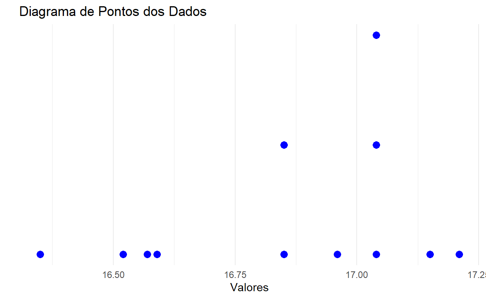

Apostila de EST 106
Apresentação

Capítulo 1 - Conceitos Introdutórios
Conceitos de estatística, população e amostra
Estatística é uma área da ciência ligada com a extração de informação de dados numéricos e a sua utilização na tomada de decisões (estabelecimento de inferências) sobre uma população da qual os dados foram obtidos.
Estatística corresponde ao campo da ciência que trata da coleção, apresentação, análise e uso de dados numéricos para a tomada de decisões e solução de problemas.
População: o conjunto de elementos que têm, em comum, determinada característica. As populações podem ser finitas ou infinitas. Além disso, existem populações que, embora finitas, são consideradas infinitas para qualquer finalidade prática.
Amostra: qualquer conjunto de elementos retirado da população, desde que esse conjunto seja não-vazio e tenha menor número de elementos do que a população.
outros conceitos importantes
Parâmetro: uma medida da população
Estimador: uma fórmula ou função dos elementos amostrais, usado para estimar um parâmetro
Estimativa: valor numérico associado ao estimador, obtido com base na amostra.
Por que estudar estatística?
Possíveis razões para o estudo da Estatística:
Atualizaçãopara facilitar o entendimento de artigos em revistas especializadas, que utilizam muito a estatística para a apresentação e interpretação dos resultados.
Desenvolvimento de trabalhos
É de fundamental importância para o auxílio no desenvolvimento de trabalhos científicos e no estabelecimento de posteriores conclusões.
Obs.: para quem tiver interesse no desenvolvimento de trabalhos de iniciação científica, ou mesmo, mais tarde, para quem pretender realizar um curso de pós-graduação. (podem ter certeza que farão, no mínimo, mais uma estatística na pós-graduação).
O uso da estatística
O método estatístico usado para estimar a tensão de ruptura ou o coeficiente de dilatação térmica de um metal, estimar o tempo médio que leva uma secretária para executar uma tarefa e estimar a média do Q.I. (quociente de inteligência) dos alunos que pretendem ingressar em algum curso da UFV. É o mesmo método estatístico usado para:
comparar o trabalho de duas máquinas
comparar a efetividade de dois processos de ensino
comparar o mérito de dois fertilizantes
comparar a audiência de dois programas de rádio.
Somatório
\[{\displaystyle \sum_{i=1}^n}x_{i}=x_{1}+x_{2}+x_{3}+\cdots+x_{n}\]
Lê-se: somatório de \(x\) índice \(i\), com \(i\) variando de \(1\) até \(n\), em que
\(n\), é a ordem da última parcela ou limite superior \((LS)\) do somatório;
\(i=1\), é a ordem da primeira parcela da soma ou limite inferior do somatório \((LI)\);
- \(i\), é o índice.
Principais Representações:
\({\displaystyle \sum_{i=1}^n}x_{i}=x_{1}+x_{2}+x_{3}+\cdots+x_{n}\quad \text{(Soma Simples)}\)
\(\displaystyle\sum_{i=1}^{n}x_i^2=x_1^2+x_2^2+ \cdots +x_n^2\quad \text{(Soma de Quadrados)}\)
\(\left( \displaystyle\sum_{i=1}^{n}x_i \right)^2=(x_1+x_2+ \cdots +x_n)^2\quad \text{(Quadrado da Soma)}\)
\(\displaystyle\sum_{i=1}^{n}x_i y_i=x_1 y_1+x_2 y_2+ \cdots +x_n y_n \quad \text{(Soma de Produtos)}\)
\(\displaystyle\sum_{i=1}^{n}x_i \displaystyle\sum_{i=1}^{n}y_i=(x_1+x_2+\cdots+x_n) \cdot (y_1+y_2+ \cdots +y_n)\quad \text{(Produto de Somas)}\)
Número de Termos:
\[NT = (LS - LI) + 1 - r\]
onde \(r\) é o número de restrições a que o somatório está sujeito.
Propriedades de Somatório:
- Somatório de uma constante:
\[\displaystyle\sum_{i=1}^{n}K=K+K+K+\cdots+K=nK\]
- Somatório do produto de uma constante por uma variável:
\[\displaystyle\sum_{i=1}^{n}K x_i=K x_1+K x_2+ \cdots +K x_n=K(x_1+x_2+ \cdots +x_n)\]
- Somatório de uma soma ou subtração de variáveis:
\[\displaystyle\sum_{i=1}^{n}(X_i+Y_i-W_i)=\displaystyle\sum_{i=1}^{n}X_i+\displaystyle\sum_{i=1}^{n}Y_i-\displaystyle\sum_{i=1}^{n}W_i\]
Exemplo:
Considere as variáveis \(X\) e \(Y\) que representam, respectivamente, as notas de duas disciplinas para um grupo de 6 alunos.
\[\begin{align} X&=\{90, 95, 97, 98, 100, 60\}\qquad Y=\{60, 70, 80, 60, 90, 75\}\\ \end{align}\]Verifique se os seguintes somatórios fornecem as respostas conforme apresentado:
# Vetores
x <- c(90, 95, 97, 98, 100, 60)
y <- c(60, 70, 80, 60, 90, 75)
#Soma Simples
sum(x)
#Soma de Quadrados
sum(x^2)
#Quadrado da Soma
(sum(x))^2
#Soma de Produtos
sum(x*y)
#Produto da soma
sum(x)*sum(y)
#Número de Termos do vetor x
length(x)
#Soma da constante 3, n=5 vezes
sum(rep(3,5))
#Somatório da Soma dos vetores x e y
sum(x,y)Os códigos acima representam, respectivamente:
\[\begin{align} \displaystyle{\sum_{i=1}^{6}x_{i}=540}\quad \displaystyle{\sum_{i=1}^{6}x_{i}^{2}=49738}\quad \displaystyle{\left(\sum_{i=1}^{6}x_{i}\right)^{2}=291600}\\ \end{align}\] \[\begin{align} \displaystyle{\sum_{i=1}^{6}x_{i}y_{i}=39190}\quad \displaystyle{\sum_{i=1}^{6}x_{i}\sum_{i=1}^{6}y_{i}=234900}\quad \displaystyle{\sum_{i=1}^{5} 3 = 15}\quad \displaystyle{\sum_{i=1}^{6} x_{i} + y_{i}=975}\\ \end{align}\]Produtório
\[\displaystyle\prod_{i=1}^{n} x_i = x_1 \cdot x_2 \cdot \cdots \cdot x_n\]
Lê-se: produtório de \(x\) índice \(i\), com \(i\) variando de \(1\) a \(n\).
Observe:
\(\displaystyle\prod_{i=1}^{n} b = b^n\)
\(\displaystyle\prod_{i=1}^{n} cx_i=cx_1 \cdot cx_2 \cdot \cdots \cdot xcx_n = c^n \cdot x_1 \cdot x_2 \cdot \cdots \cdot x_n = c^n \displaystyle\prod_{i=1}^{n} x_i\)
\(\displaystyle\prod_{i=1}^{n}x_i y_i = x_1 y_1 \cdot x_2 y_2 \cdot \cdots \cdot x_n y_n = (x_1 \cdot x_2 \cdot \cdots \cdot x_n) \cdot (y_1 \cdot y_2 \cdot \cdots \cdot y_n) = (\displaystyle\prod_{i=1}^{n} x_i) \cdot (\displaystyle\prod_{i=1}^{n} y_i)\)
\(\displaystyle\prod_{i=1}^{n} i= 1 \cdot 2 \cdot 3 \cdot \cdots \cdot n = n!\)
\(log\displaystyle\prod_{i=1}^{n} x_i =log(x_1 \cdot x_2 \cdot \cdots \cdot x_n) = log x_1 +log x_2 + \cdots + log x_n = \displaystyle \sum_{i=1}^n log x_{i}\)
Exercícios
Exercício 1
1 - Sabendo-se que \({\displaystyle \sum_{i=1}^5}x_{i}=-6\) e \({\displaystyle \sum_{i=1}^5}x_{i}^2=12\), calcule:
\({\displaystyle \sum_{i=1}^5}(4x_{i}+5)\)
\({\displaystyle \sum_{i=1}^5}x_{i}(x_i -2)\)
\({\displaystyle \sum_{i=1}^5}(x_{i}-3)^2\)
# Defina os somatórios fornecidos no enunciado
# a) Somatório de (4Xi + 5)
# b) Somatório de Xi(Xi - 2)
# c) Somatório de (Xi - 3)^2# Definindo os somatórios fornecidos no enunciado
sum_X <- -6 # Somatório de Xi
sum_X2 <- 12 # Somatório de Xi^2
# a) Somatório de (4Xi + 5)
soma_a <- 4 * sum_X + 5 * 5
# b) Somatório de Xi(Xi - 2)
soma_b <- sum_X2 - 2 * sum_X
# c) Somatório de (Xi - 3)^2
soma_c <- sum_X2 - 6 * sum_X + 5 * 9
# Imprimindo os resultados
soma_a
soma_b
soma_cExercício 2
2 - Sabendo-se que \({\displaystyle \sum_{i=1}^3}x_{i}=4\) e \({\displaystyle \sum_{i=1}^3}x_{i}^2=16\), calcule:
\({\displaystyle \sum_{i=1}^3}(3x_{i}+2)\)
\({\displaystyle \sum_{i=1}^3}x_{i}(x_i -3)\)
\({\displaystyle \sum_{i=1}^3}(x_{i}-1)^2\)
#Guarde na memória os objetos/valores informados
#(Soma de Termos do Somatório)
#Resolva a primeira soma
#Calcule os demais somatórios#Guarde na memória os objetos/valores informados
#Resolva a primeira soma
Resposta1 <- 18
Resposta1
#Calcule os demais somatórios
Resposta2 <- 4
Resposta2
Resposta3 <- 11
Resposta3Exercício 3
Sabendo-se que
\[ x_1 =2;\quad x_2=3;\quad x_3=5 \\ y_1=3; \ \ y_2=5; \ \ y_3=7 \] Calcule:
\(\displaystyle\prod_{i=1}^{3} X_i\)
\(\displaystyle\prod_{i=1}^{3} 3 \cdot Y_i\)
\(\displaystyle\prod_{i=1}^{3} X_i \cdot Y_i\)
# Defina os valores de X e Y
# a) Produto dos elementos de X
# b) Produto dos elementos 3 * Y_i
# c) Produto dos elementos X_i * Y_i# Definindo os valores de X e Y
X <- c(2, 3, 5)
Y <- c(3, 5, 7)
# a) Produto dos elementos de X
produto_a <- prod(X)
# b) Produto dos elementos 3 * Y_i
produto_b <- prod(3 * Y)
# c) Produto dos elementos X_i * Y_i
produto_c <- prod(X * Y)
# Imprimindo os resultados
produto_a
produto_b
produto_cExercício 4
Efetue as seguintes somas:
\[\begin{align} {\displaystyle \sum_{i=1}^5}x_i\qquad \qquad{\displaystyle\sum_{i=1}^5}{x_i}^2 \qquad\qquad \left( {\displaystyle \sum_{i=1}^5}x_i \right)^2\\ {\displaystyle \sum_{i=1}^5}x_i \cdot {\displaystyle \sum_{i=1}^4}y_i\qquad \qquad {\displaystyle \sum_{i=1}^4}y_i\qquad {\displaystyle \sum_{i=1}^4}{y_i}^2\\ \displaystyle\prod_{i=1}^{5} X_i \cdot \displaystyle\prod_{i=1}^{4} Y_i\qquad\qquad \displaystyle\prod_{i=1}^{5} X_i\qquad\qquad \displaystyle\prod_{i=1}^{4} Y_i \end{align}\]
# Defina os valores dos vetores x e y
# Calcule
# 1) Somatório dos valores de x_i
# 2) Somatório dos quadrados dos valores de x_i
# 3) Quadrado do somatório dos valores de x_i
# 4) Produto dos somatórios dos valores de x_i e y_i
# 5) Somatório dos valores de y_i
# 6) Somatório dos quadrados dos valores de y_i
# 7) Produto dos produtos de x_i e y_i
# 8) Produto dos valores de x_i
# 9) Produto dos valores de y_i# Definindo os valores dos vetores x e y
x <- c(2, 3, 5, 1, 4) # Exemplo de valores para x_i
y <- c(3, 5, 7, 2) # Exemplo de valores para y_i
# Cálculos
# 1) Somatório dos valores de x_i
soma_x <- sum(x)
# 2) Somatório dos quadrados dos valores de x_i
soma_x2 <- sum(x^2)
# 3) Quadrado do somatório dos valores de x_i
soma_x_quadrado <- (sum(x))^2
# 4) Produto dos somatórios dos valores de x_i e y_i
produto_soma_xy <- sum(x) * sum(y)
# 5) Somatório dos valores de y_i
soma_y <- sum(y)
# 6) Somatório dos quadrados dos valores de y_i
soma_y2 <- sum(y^2)
# 7) Produto dos produtos de x_i e y_i
produto_xy <- prod(x) * prod(y)
# 8) Produto dos valores de x_i
produto_x <- prod(x)
# 9) Produto dos valores de y_i
produto_y <- prod(y)
# Imprimindo os resultados
soma_x
soma_x2
soma_x_quadrado
produto_soma_xy
soma_y
soma_y2
produto_xy
produto_x
produto_yExercício 5
Calcular:
\(\displaystyle \sum_{i=1}^5 \displaystyle \sum_{j=2}^4 (i+j)\)
\(\displaystyle \sum_{j=5}^9 \displaystyle \sum_{i=1}^6 i \cdot j\)
# a) Somatório duplo de (i + j) para i = 1 até 5 e j = 2 até 4
# b) Somatório duplo de i * j para i = 1 até 6 e j = 5 até 9# a) Somatório duplo de (i + j) para i = 1 até 5 e j = 2 até 4
soma_a <- sum(outer(1:5, 2:4, FUN = "+"))
# b) Somatório duplo de i * j para i = 1 até 6 e j = 5 até 9
soma_b <- sum(outer(1:6, 5:9, FUN = "*"))
# Imprimindo os resultados
soma_a
soma_bCapítulo 2 - Estatística Descritiva
Estatística: estatística indutiva (inferência estatística) e estatística descritiva.
- Estatística Indutiva: (Inferência Estatística)
Se uma amostra é representativa de uma população, conclusões importantes sobre a população podem ser inferidas de sua análise.
A parte da estatística que trata das condições sob as quais essas inferências são válidas chama-se estatística indutiva ou inferência estatística.
Neste capítulo, estudaremos a Estatística Descritiva.
- Estatística Descritiva
É a parte da Estatística que procura somente descrever e avaliar um certo grupo, seja ele a população ou a amostra. No caso de estarmos trabalhando com amostras, não desejamos tirar quaisquer conclusões ou inferências sobre um grupo maior.
Veremos: Apresentações (e descrições resumidas) dos dados.
1- métodos gráficos
envolvendo apresentação gráfica e/ou
tabular
2- métodos numéricos
envolvendo apresentações de medidas de posição e/ou
de dispersão
Apresentação Gráfica Tabular
Gráficos: uma das formas mais eficientes de apresentação de dados.
Um gráfico é, essencialmente, uma figura constituida a partir de uma tabela.
Tabelas: idéia mais precisa; possibilitam uma inspeção mais rigorosa aos dados.
Gráficos: mais indicados em situações que objetivam dar uma visão mais rápida e fácil.
Cuidado com as regras gerais para confecção de tabelas e gráficos.
Obs.: as tabelas (e figuras) devem ter significado próprio, ou seja, devem ser entendidas mesmo quando não se lê o texto em que estão apresentadas \(\rightarrow\) títulos bem escritos.Veremos:
Diagrama de pontos
Diagrama de ramos-e-folhas
Tabela de distribuição de frequências
Histograma (e Ogiva)
Outros (eventualmente)
Diagrama de pontos (dot diagram) (ou diagrama uniaxial de variação)
Útil para apresentar um pequeno conjunto de dados (até algo em torno de 20 observações).
Podemos ver, de uma maneira rápida e fácil:
a tendência central dos dados
sua distribuição ou variabilidade.
Exemplo:
Considere o seguinte resultado de um experimento no qual o engenheiro testa adição de uma substância em cimento de construção para determinar seu efeito na força da tensão de aderência (em determinada $unidade/cm^$2):
Dados:
\(16,85 \ 16,40 \ 17,21 \ 16,35 \ 16,52 \ 17,04 \ 16,96 \ 17,15 \ 16,59 \ 16,57\)
# Dados fornecidos
dados <- c(16.85, 16.85, 17.21, 16.35, 16.52, 17.04, 17.04, 17.04, 16.96, 17.15, 16.59, 16.57)
# Criar um data frame
df <- data.frame(dados = sort(dados))
# Adicionar uma coluna de posição para o eixo Y
df$posicao <- ave(df$dados, df$dados, FUN = seq_along)
# Criar o gráfico de pontos
ggplot(df, aes(x = dados, y = posicao)) +
geom_point(color = "blue", size = 3) +
ylim(0,3) +
scale_y_continuous(breaks = NULL) +
labs(x = "Valores", y = "",
title = "Diagrama de Pontos dos Dados") +
theme_minimal()
Observe que os dados estão centrados num valor próximo de 16,8 e que os valores da tensão de aderência caem no intervalo de cerca de 16,3 até 17,2 \(ud/cm^2\).
Diagrama de ramo e folhas
Diagrama de ramos e folhas (stem-and-leaf diagram)
Quando número de observações é relativamente grande
Quando se quer manter os detalhes informativos dos dados
Nos dá uma idéia da distribuição dos valores originais.
Observe com o exemplo abaixo como o diagrama de folhas e ramos pode auxiliar no estudo de determinados bancos de dados.
Exemplo:
Barulho é medido em decibéis, representado por dB. Um decibel corresponde ao nível do som mais fraco que pode ser ouvido em um local silencioso por alguém com boa audição. Um sussurro corresponde a cerca de 30 dB; a voz humana em conversação normal corresponde a cerca de 70dB; um rádio em volume alto cerca de 100 dB; Desconforto para os ouvidos geralmente ocorre a cerca de 120 dB. Os dados abaixo correspondem aos níveis de barulho medidos em 36 horários diferentes em um determinado local.
x <- c(82, 89, 94, 110, 74 , 122, 112, 95, 100, 78, 65, 60,
90, 83, 87, 75, 114, 85 ,69 ,94 ,124, 115 ,107, 88,
97, 74, 72, 68, 83 , 91 ,90 ,102, 77, 125, 108, 65)
stem(x)Organização dos dados em classes de ocorrência, ou não, segundo suas frequências absolutas. A apresentação atravez de uma tabela de frequência é util quando o número de valores distintos da variável em estudo é muito grande. Em tais casos seria útil dividir os valores em grupos, ou intervalos de classe.
Distribuição de frequência (forma tabular)
Uma distribuição de frequências é um resumo mais compacto dos dados, em relação ao diagrama de ramo e folhas. Para construir uma distribuição de frequências, temos de dividir a faixa de dados em intervalos, que são geralmente chamados de intervalos de classe ou células. Se possível, os intervalos devem ser de iguais larguras de modo a aumentar a informação visual na distribuição de frequências. Algum julgamento tem de ser usado na seleção do número de intervalos de classes, de modo que uma apresentação razoável possa ser desenvolvida. O número de intervalos depende do número de observações e da quantidade de espalhamento ou dispersão dos dados. Uma distribuição de frequências não será informativa se usar um número muito baixo ou muito alto de intervalos de classe. Geralmente, achamos que 5 a 20 intervalos são satisfatórios na maioria dos casos e que o número de intervalos deve crescer com \(n.\) Na prática, trabalha-se bem se o número de intervalos de classe for aproximadamente igual à raiz quadrada do número de observações. Sendo assim, considere um banco de dados com valores \(x_{1},x_{2},\cdots,x_{n}\) e os seguintes postulados para construir uma tabela de frequências:
1-Determine o número de termos \((n)\), o menor valor dos dados \(x_{(1)}\) e o maior valor dos dados \(x_{(n)}.\)
2- Determine a amplitude total \((AT)\) dada por:
\[AT=x_{(n)}-x_{(1)}\]
3 -Determine o número de classes \(n_{c}\) que pode ser calculada como:
\[n_{c}\approx\sqrt{n}\quad \textrm{ou}\quad n_{c}\approx 1+3,322\log{n}\]
Obs: \(\approx\) representa o inteiro mais próximo.
4 - A amplitude das classes \((c)\) é definida como:
\[c=\dfrac{AT}{(n_{c}-1)}\]
5 -Defina \(Li_{1}=x_{(1)}-\dfrac{c}{2},\) \(Ls_{k}=Li_{k}+c,\ 1\leq k \leq n_{c}\) e \(Li_{k}=Ls_{(k-1)},2 \leq k \leq n_{c}.\) Em que \(Li_{j}\) representa o limite inferior da classe \(j\) e \(Ls_{j}\) representa o limite superior da classe \(j.\)
6 -A frequência absoluta \((f_{a})\) de uma classe \(j\) é encontrada contabilizando os valores \(x_{1},x_{2},\cdots,x_{n}\) que pertencem ao intervalo \([Li_{j},Ls_{j}).\)
Exemplo: Considere o banco de dados seguinte e elabore uma tabela de distribuição de frequências seguindo os passos acima.
17 | 10 | 10 | 29 | 36 | 32 | 26 | 37 | 31 | 24 | 19 | 29 | 24 | 30 | 40 | 35 |
18 | 11 | 14 | 26 | 36 | 30 | 36 | 14 | 39 | 10 | 35 | 17 | 10 | 43 | 43 | 34 |
20 | 12 | 16 | 14 | 38 | 15 | 18 | 14 | 44 | 39 | 34 | 30 | 40 | 22 | 39 | 15 |
22 | 13 | 19 | 40 | 14 | 50 | 13 | 17 | 15 | 11 | 40 | 47 | 13 | 15 | 36 | 20 |
26 | 13 | 23 | 33 | 42 | 25 | 43 | 26 | 42 | 29 | 25 | 45 | 28 | 31 | 28 | 25 |
28 | 15 | 24 | 34 | 38 | 34 | 16 | 48 | 14 | 34 | 26 | 26 | 41 | 39 | 12 | 11 |
29 | 20 | 24 | 17 | 12 | 30 | 40 | 24 | 42 | 25 | 25 | 41 | 33 | 23 | 43 | 48 |
29 | 20 | 28 | 17 | 11 | 40 | 46 | 31 | 35 | 43 | 44 | 22 | 13 | 38 | 44 | 49 |
30 | 26 | 30 | 40 | 42 | 50 | 16 | 28 | 43 | 21 | 29 | 23 | 29 | 20 | 14 | 11 |
30 | 32 | 31 | 22 | 27 | 20 | 23 | 45 | 19 | 23 | 17 | 10 | 10 | 30 | 14 | 32 |
32 | 41 | 37 | 30 | 21 | 25 | 47 | 38 | 22 | 49 | 32 | 48 | 47 | 35 | 37 | 29 |
35 | 43 | 40 | 38 | 40 | 25 | 43 | 18 | 32 | 12 | 36 | 21 | 11 | 19 | 24 | 21 |
36 | 44 | 44 | 41 | 33 | 26 | 37 | 34 | 46 | 47 | 39 | 27 | 32 | 50 | 40 | 32 |
46 | 49 | 47 | 41 | 45 | 44 | 26 | 44 | 13 | 44 | 23 | 28 | 29 | 33 | 16 | 41 |
Seguindo os postulados temos: \(n=240,\quad x_{(1)}=10,\quad x_{(n)}=50,\) \(AT=40,\quad n_{c}=\sqrt{240}\approx 15,\)
\(c=2,857,\quad Li_{1}=8,572\) e \(Ls_{1}=11,4285.\) Assim, temos a seguinte distribuição de frequências:
| Classes | \(f_{a}\) | \(f_{r}\) | \(f_{acm}\) | \(fr_{acm}\) |
|---|---|---|---|---|
| [8,572; 11,4285) | 12 | 0,05 | 12 | 0,05 |
| [11,4285;14,2855) | 19 | 0,079167 | 31 | 0,129167 |
| [14,2855;17,1425) | 17 | 0,070833 | 48 | 0,2 |
| [17,1425;19,9995) | 7 | 0,029167 | 55 | 0,229167 |
| [19,9995;22,8565) | 16 | 0,066667 | 71 | 0,295833 |
| [22,8565;25,7135) | 20 | 0,083333 | 91 | 0,379167 |
| [25,7135;28,5705) | 19 | 0,079167 | 110 | 0,458333 |
| [28,5705;31,4275) | 23 | 0,095833 | 133 | 0,554167 |
| [31,4275;34,2845) | 18 | 0,075 | 151 | 0,629167 |
| [34,2845;37,1415) | 17 | 0,070833 | 168 | 0,7 |
| [37,1415;39,9985) | 12 | 0,05 | 180 | 0,75 |
| [39,9985;42,8555) | 21 | 0,0875 | 201 | 0,8375 |
| [42,8555;45,7125) | 19 | 0,079167 | 220 | 0,916667 |
| [45,7125;48,5695) | 12 | 0,05 | 232 | 0,966667 |
| [48,5695;51,4265) | 8 | 0,033333 | 240 | 1 |
| Total | 240 | 1 | - | - |
\(f_{a}\) é a frequência absoluta. \(f_{r}\) é a frequência relativa. \(f_{acm}\) representa a frequência absoluta acumulada e \(fr_{acm}\) representa a frequência relativa acumulada.
Uma distribuição de frequência é um método de se agrupar dados em classes de modo a fornecer a quantidade (e/ou a percentagem) de dados em cada classe. O método considerado neste texto será o padrão nas aulas de MAF 105 e deve ser seguido na resolução de problemas da disciplina.
Organização dos dados em classes de ocorrência, ou não, segundo suas frequências absolutas.
Obs.: util quando o número de valores distintos da variável em estudo é muito grande. Em tais casos seria útil dividir os valores em grupos, ou intervalos de classe.
Obs.: (para definir o número de classes)
i)não escolher muito poucas classes, para evitar perda de informação sobre os dados;
ii)não escolher muitas classes, para ão mascarar algum padrão de distribuição para a variável em estudo.
Na prática: Tentar variados números de classes e verificar, com a ajuda de um computador, o número ideal para os dados em questão (a não ser que as classes já sejam pré-definidas)
Uma maneira de escolher o número de classes \(k: \sqrt{n}\)
Amplitude da classe: \(c=\dfrac{(LS - LI)}{\sqrt{n}}\)
Com base no exemplo anterior que foi apresentado a respeito dos níveis de barulhos, é possivel organizar os dados em uma tabela de frequencia, veja abaixo:
# Dados fornecidos
x <- c(82, 89, 94, 110, 74 , 122, 112, 95, 100, 78, 65, 60,
90, 83, 87, 75, 114, 85, 69, 94, 124, 115, 107, 88,
97, 74, 72, 68, 83, 91, 90, 102, 77, 125, 108, 65)
# Definindo os intervalos para a tabela de frequência
breaks <- seq(60, 130, by=10) # Intervalos de 10 em 10 dB
# Criando a tabela de frequência
freq_abs <- table(cut(x, breaks, right=FALSE))
# Calculando a frequência relativa
freq_rel <- prop.table(freq_abs)
# Calculando a frequência acumulada
freq_acum <- cumsum(freq_abs)
# Calculando a frequência relativa acumulada
freq_rel_acum <- cumsum(freq_rel)
# Criando a tabela completa
freq_df <- data.frame(
"Inter. de dB" = names(freq_abs),
"Freq. Abs." = as.numeric(freq_abs),
"Freq. Rel. (%)" = round(100 * freq_rel, 2),
"Freq. Ac." = freq_acum,
"Freq. Rel. Ac. (%)" = round(100 * freq_rel_acum, 2)
)
# Mostrando a tabela de frequência completa
knitr::kable(freq_df)Exercícios
Suponha que uma empresa deseja avaliar a distribuição dos salários pagos por hora a seus funcionários. Dados (dados brutos):
\[ 13,3 ; \ 15,2 ; \ 12,4 ; \ 15,8 ; \ 9,6 ; \ 10,4 ; \ 13,2 ; \ 8,8 ; \ 8,3 ; \ 8,5 \\ 10,2 ; \ 11,5 ; \ 12,6 ; \ 10,7 ; \ 12,6 ; \ 9,7 ; \ 12,1 ; \ 13,5 ; \ 10,3 ; \ 14,3 \\ 9,8 ; \ 12,3 ; \ 10,4 ; \ 11,6 ; \ 12,4 ; \ 12,9 ; \ 11,6 ; \ 10,3 ; \ 14,2 ; \ 13,8 \]
Construa uma tabela de frequência utilizando os dados acima.
Histograma
É essencialmente uma representação gráfica de uma tabela de distribuição de freqüências, quando temos classes com valores numéricos apresentando continuidade.
Feito a partir das frequências simples de cada classe ou a partir das frequências relativas.
-Bastaria informar corretamente o que seria usado no eixo vertical.
Histograma
# Dados fornecidos
x <- c(82, 89, 94, 110, 74 , 122, 112, 95, 100, 78, 65, 60,
90, 83, 87, 75, 114, 85, 69, 94, 124, 115, 107, 88,
97, 74, 72, 68, 83, 91, 90, 102, 77, 125, 108, 65)
# Criando o histograma
hist(x, breaks=seq(60, 130, by=10),
main="Histograma dos Níveis de Barulho",
xlab="Nível de Barulho (dB)",
ylab="Frequência",
col="lightblue",
border="black")Se usar as frequências acumuladas, ou frequências acumuladas relativas. Nesse caso teríamos a chamada Ogiva, ou ogiva percentual, respectivamente
# Dados fornecidos
x <- c(82, 89, 94, 110, 74 , 122, 112, 95, 100, 78, 65, 60,
90, 83, 87, 75, 114, 85, 69, 94, 124, 115, 107, 88,
97, 74, 72, 68, 83, 91, 90, 102, 77, 125, 108, 65)
# Definindo os intervalos para a tabela de frequência
breaks <- seq(60, 130, by=10)
# Criando a tabela de frequência acumulada
freq_abs <- table(cut(x, breaks, right=FALSE))
freq_acum <- cumsum(freq_abs)
# Criando a ogiva
plot(breaks[-1], freq_acum, type="o",
main="Ogiva dos Níveis de Barulho",
xlab="Nível de Barulho (dB)",
ylab="Frequência Acumulada",
col="blue",
pch=16,
lwd=2)Medidas de Posição
Apresentaremos algumas estatísticas úteis para resumir, de modo bastante conciso, as informações contidas em um conjunto de dados.
Média Aritmética
Dado um conjunto de n valores numéricos \(x_1, x_2,\cdots, x_n\)
\(\overline{x} = \frac{\displaystyle \sum_{i=1}^n x_{i}}{n}\)
Exemplo:
A média aritmética de \(x = \{10, 15, 11\}\) é:
\(\overline{x} = \frac{\displaystyle \sum_{i=1}^3 x_{i}}{3}= \frac{10+15+11}{3} = \frac{36}{3} = 12\)
Média Ponderada
Utiliza-se quando dados estão organizados em uma tabela de distribuição de frequências.
\(\overline{x} = \frac{\displaystyle \sum_{i=1}^k f_i x_{i}}{n}\) , onde \(\displaystyle \sum_{i=1}^k f_i = n\)
Exemplo:
Encontre a mediana da idade dos indivíduos:
| Idade | Frequencia |
|---|---|
| 15 | 14 |
| 16 | 15 |
| 17 | 14 |
| 18 | 4 |
| 19 | 5 |
| 20 | 2 |
Solução:
já que temos 54 observações, segue que a mediana amostral será a media dos valores ocupando as posições 27 e 28, quando essas 54 observações são organizadas em ordem crescente. Portanto a mediana será o valor 16.
Mediana Amostral
valor intermediário do rol de um conjunto de dados.
Se \(n\) for ímpar: A mediana será o valor que ocupa a posição \(\frac{(n + 1)}{2}\);
se \(n\) for par: A mediana será a média dos valores ocupando as posições \(\frac{n}{2}\) e \(\frac{n}{2}+1\).
Exemplo:
Qual a mediana de \(X = \{1, 2, 5, 8, 10, 15, 18 \}\)?
Solução: \(X_{md} = X_{\frac{(n+1)}{2}} = X_{\frac{(7+1)}{2}} = X_4 = 8\)
Exemplo:
Qual a mediana de \(X = \{1, 2, 15, 8, 10, 5, 18, 9 \}\)?
Solução: \(X_{md} = \frac{X_{\frac{n}{2}} + X_{\frac{n}{2} +1}}{2} = \frac{X_4 + X_5}{2} = 8,5\)
Moda Amostral
É o valor que ocorre com maior frequência.
Podemos ter séries amodais, unimodais, bimodais ou multimodais, dependendo do número de valores modais (0, 1, 2, mais que 2, respectivamente) ocorrendo na amostra.
Exemplo:
Encontre a moda de acordo com a tabela abaixo:
| Idade | Frequencia |
|---|---|
| 15 | 14 |
| 16 | 15 |
| 17 | 14 |
| 18 | 4 |
| 19 | 5 |
| 20 | 2 |
Solução: \(X_{mo} = 16\)
Justificativa: Esse valor ocorre com maior frequência na distribuição. Essa seria uma distribuição unimodal.
Medidas de Dispersão
Úteis para complementar as informações fornecidas pelas medidas de posição. Descrevem a variabilidade ocorrendo no conjunto de dados sendo analisados.
Variância Amostral
A variância amostral de um conjunto de dados, \(x_1, x_2, \cdots, x_n\), é definida por:
\[ s^2 = \frac{\displaystyle \sum_{i=1}^n (x_i - \overline{x})^2}{n-1}= \frac{SQD_x}{n-1}\]
Obs: \(SQD_x\) = Soma dos quadrados dos desvios de \(x\).
Exemplo:
Encontre a variância amostral para os dois conjuntos de dados abaixo:
\[ A: 3, 4, 6, 7, 10 \\ B: -20, 5, 15, 24 \]
Solução: A média para o conjunto \(A\) é \(6\); portanto a variância será:
\[ s^2 = \frac{(-3)^2 +(-2)^2 + (0)^2 + 1^2 + 4^2}{4} = 7,5 \]
A média para o conjunto \(B\) também é \(6\); portanto a variância de \(B\)
será:
\[ s2 = \frac{(-26)^2 + (-1)^2 + 9^2 + (18)^2}{3} \cong 360,67 \]
Obs: Se a cada valor de \(X\) tivermos associado sua frequência de ocorrência, então:
\[ s^2= \frac{\displaystyle \sum_{i} f_i(x_i - \overline{x})^2}{\displaystyle \sum_{i}f_i - 1} = \frac{\displaystyle \sum_{i} f_i x_{i}^2 - \frac{\left(\displaystyle \sum_{i} f_i x_i \right)^2}{\displaystyle \sum_{i}f_i}}{\displaystyle \sum_{i}f_i - 1}= \frac{SQD}{n-1} \]
Exemplo:
Encontre a variância da idade dos indivíduos de acordo com os dados abaixo:
| Idade | Frequencia |
|---|---|
| 15 | 14 |
| 16 | 15 |
| 17 | 14 |
| 18 | 4 |
| 19 | 5 |
| 20 | 2 |
solução: \(n\) = soma das frequências = \(54\);
média = \(16,6\)
\(SQD = 14(15 - 16,6)^2 + 15(16 - 16,6)^2 + \cdots + 2(20 - 16,6)^2 = 103,24\)
Assim, \(s^2 = \frac{103,24}{53} \cong 1,9479\)
Desvio Padrão
Raiz quadrada positiva da variância amostral:
\[ s = \sqrt{s^2} = \sqrt{s^2 = \frac{\displaystyle \sum_{i=1}^n (x_i - \overline{x})^2}{n-1}} \]
Amplitude total
A amplitude total \((AT)\) é a diferença entre o maior e o menor valor da série.
\[ AT = max(X) - min(X) \]
Tem a vantagem de ser rápido e fácil de ser calculada;
Fornece um número índice grosseiro da variabilidade de uma distribuição, por levar em conta apenas 2 valores de um conjunto.
Erro-padrao da média
O erro-padrão da média mede a precisão da média. Sua fórmula é dada por:
\[ s(\overline{X})= s_{\overline{x}} = \sqrt{V(\overline{X})} = \sqrt{\frac{s_{x}^2}{n}} = \frac{s_x}{\sqrt{n}} \]
Obs.:
maior erro padrão da média \(\rightarrow\) menor precisão
menor erro padrão da média \(\rightarrow\) maior precisão
Coeficiente de Variação
É uma medida de dispersão relativa.
Útil para comparação, em termos relativos, do grau de concentração, em torno da média, de séries distintas.
Permite a comparação de séries de variáveis com unidades diferentes.
\[ CV(\%) = \frac{s_x}{\overline{X}} \cdot 100 \]
Obs.: Sejam duas amostras distintas \(A\) e \(B\). A amostra mais homogênea (de menor variabilidade relativa) será a que tiver o menor \(CV\).
Se \(A_{\overline{x}} = B_{\overline{x}}\) , então o próprio desvio padrão informará qual é a mais homogênea.
Valores muito altos de \(CV\) indicam pequena representatividade da média.
Exemplo:
Supondo duas amostras: \(A=\{1, 3, 5\}\) ; \(B=\{53, 55, 57\}\). Pergunta-se:
Qual das duas é a mais homogênea?
solução: \(C.V.A = \frac{2}{3} \cdot 100 = 66,7 \%; \\ C.V.B = \frac{2}{55} \cdot 100 = 3,6 \%\)
Portanto a amostra \(B\) é a mais homogênea.
Exercícios
Exercício 1
Considerando os dados amostrais abaixo, calcular: média aritmética, variância, desvio padrão, erro padrão da média e coeficiente de variação. Dados: 2, 3, 5, 1, 2, 1, 4, 3, 3, 4, 3.
# Dados fornecidos
# Cálculos
# Exibir resultados# Dados fornecidos
dados <- c(2, 3, 5, 1, 2, 1, 4, 3, 3, 4, 3)
# Cálculos
media <- mean(dados) # Média aritmética
variancia <- var(dados) # Variância
desvio_padrao <- sd(dados) # Desvio padrão
erro_padrao <- desvio_padrao / sqrt(length(dados)) # Erro padrão da média
coeficiente_variacao <- (desvio_padrao / media) * 100 # Coeficiente de variação (%)
# Exibir resultados
cat("Média:", round(media, 2), "\n")
cat("Variância:", round(variancia, 2), "\n")
cat("Desvio Padrão:", round(desvio_padrao, 2), "\n")
cat("Erro Padrão da Média:", round(erro_padrao, 2), "\n")
cat("Coeficiente de Variação:", round(coeficiente_variacao, 2), "%\n")Exercício 2
Em certa região a temperatura média é 20 °C e a precipitação média é 700 \(mm\). O desvio padrão para temperatura é 3 °C, enquanto que a variância para a precipitação é 1225 \(mm^2\). Qual dos dois fenômenos apresenta maior variabilidade? Justifique.
# Dados fornecidos
# Cálculo do Coeficiente de Variação (CV) para cada fenômeno
# Exibir resultados# Dados fornecidos
media_temp <- 20 # Média da temperatura (°C)
desvio_padrao_temp <- 3 # Desvio padrão da temperatura (°C)
media_prec <- 700 # Média da precipitação (mm)
variancia_prec <- 1225 # Variância da precipitação (mm^2)
# Cálculo do Coeficiente de Variação (CV) para cada fenômeno
cv_temp <- (desvio_padrao_temp / media_temp) * 100
cv_prec <- (sqrt(variancia_prec) / media_prec) * 100
# Exibir resultados
cat("Coeficiente de Variação da Temperatura:", round(cv_temp, 2), "%\n")
cat("Coeficiente de Variação da Precipitação:", round(cv_prec, 2), "%\n")Exercício 3
Um artigo retirado da revista Technometrics (Vol. 19, 1977, p. 425) apresenta os seguintes dados sobre a taxa de octanagem de várias misturas de gasolina:
\[ 88,5; \ 87,7; \ 83,4; \ 86,7; \ 87,5; \ 91,5; \ 88,6; \ 100,3; \ 96,5; \ 93,3; \\ 94,7; \ 91,1;\ 91,0; \ 94,2; \ 87,8; \ 89,9; \ 88,3; \ 87,6; \ 84,3; \ 86,7; \\ 84,3; \ 86,7; \ 88,2; \ 90,8; \ 88,3; \ 98,8; \ 94,2; \ 92,7; \ 93,2; \ 91,0; \\ 90,1; \ 93,4; \ 88,5; \ 90,1; \ 89,2; \ 88,3; \ 85,3; \ 87,9; \ 88,6; \ 90,9; \\ 89,0; \ 96,1; \ 93,3; \ 91,8; \ 92,3; \ 90,4; \ 90,1; \ 93,0; \ 88,7; \ 89,9; \\ 89,8; \ 89,6; \ 87,4; \ 88,4; \ 88,9; \ 91,2; \ 89,3; \ 94,4; \ 92,7; \ 91,8; \\ 91,6; \ 90,4; \ 91,1; \ 92,6; \ 89,8; \ 90,6; \ 91,1; \ 90,4; \ 89,3; \ 89,7; \ 90,3; \ 91,6;\\ 90,5; \ 93,7; \ 92,7; \ 92,2; \ 92,2; \ 91,2; \ 91,0; \ 92,2; \ 90,0; \ 90,7 \]
Construa o diagrama de folhas-e-ramos para esses dados
Construa a distribuição de frequência e o histograma. Use 8 intervalos de classe.
Construa a distribuição de frequência e o histograma, agora com 16 intervalos de classe.
Compare a forma dos dois histogramas em b e c. Ambos os histogramas mostram informações similares?
# a) Diagrama de folhas-e-ramos
# Dados fornecidos
# Construindo o diagrama de folhas-e-ramos
# b) Distribuição de frequência e histograma com 8 intervalos de classe
# c) Distribuição de frequência e histograma com 16 intervalos de classe# a) Diagrama de folhas-e-ramos
# Dados fornecidos
octanagem <- c(88.5, 87.7, 83.4, 86.7, 87.5, 91.5, 88.6, 100.3, 96.5, 93.3, 94.7, 91.1,
91.0, 94.2, 87.8, 89.9, 88.3, 87.6, 84.3, 86.7, 84.3, 86.7, 88.2, 90.8,
88.3, 98.8, 94.2, 92.7, 93.2, 91.0, 90.1, 93.4, 88.5, 90.1, 89.2, 88.3,
85.3, 87.9, 88.6, 90.9, 89.0, 96.1, 93.3, 91.8, 92.3, 90.4, 90.1, 93.0,
88.7, 89.9, 89.8, 89.6, 87.4, 88.4, 88.9, 91.2, 89.3, 94.4, 92.7, 91.8,
91.6, 90.4, 91.1, 92.6, 89.8, 90.6, 91.1, 90.4, 89.3, 89.7, 90.3, 91.6,
90.5, 93.7, 92.7, 92.2, 92.2, 91.2, 91.0, 92.2, 90.0, 90.7)
# Construindo o diagrama de folhas-e-ramos
cat("a) Diagrama de folhas-e-ramos:\n")
stem(octanagem)
# b) Distribuição de frequência e histograma com 8 intervalos de classe
cat("\nb) Distribuição de frequência e histograma com 8 intervalos:\n")
hist(octanagem, breaks = 8, main = "Histograma com 8 Intervalos de Classe",
xlab = "Taxa de Octanagem", col = "skyblue", border = "black")
frequencia_8 <- table(cut(octanagem, breaks = 8))
cat("Distribuição de frequência (8 intervalos):\n")
print(frequencia_8)
# c) Distribuição de frequência e histograma com 16 intervalos de classe
cat("\nc) Distribuição de frequência e histograma com 16 intervalos:\n")
hist(octanagem, breaks = 16, main = "Histograma com 16 Intervalos de Classe",
xlab = "Taxa de Octanagem", col = "lightgreen", border = "black")
frequencia_16 <- table(cut(octanagem, breaks = 16))
cat("Distribuição de frequência (16 intervalos):\n")
print(frequencia_16)Exercício 4
Calcule a média, mediana, e amplitude total dos valores dispostos no seguinte diagrama de ramos-e-folhas.
COLOCAR DIAGRAMA
# Construindo o vetor a partir do diagrama de ramos-e-folhas:
# a) Cálculo da média
# b) Cálculo da mediana
# c) Cálculo da amplitude total
# Exibir resultados# Construindo o vetor a partir do diagrama de ramos-e-folhas:
valores <- c(60, 65, 65, 68, 69,
72, 74, 74, 75, 77, 78,
82, 83, 83, 85, 87, 88, 89,
90, 90, 91, 94, 94, 95, 97,
100, 102, 107, 108,
110, 112, 114, 115,
122, 124, 125)
# a) Cálculo da média
media <- mean(valores)
# b) Cálculo da mediana
mediana <- median(valores)
# c) Cálculo da amplitude total
amplitude_total <- max(valores) - min(valores)
# Exibir resultados
cat("Média:", round(media, 2), "\n")
cat("Mediana:", mediana, "\n")
cat("Amplitude Total:", amplitude_total, "\n")Capítulo 3 - Probabilidade
O conhecimento de probabilidade constrói a base que nos permite entender como a inferência e as técnicas de auxílio de decisão são desenvolvidas, porque elas funcionam, e como as conclusões obtidas a partir desses procedimentos podem ser apresentadas e interpretadas corretamente. Para o perfeito entendimento de probabilidade, alguns conceitos são importantes.
Experimentos probabilísticos ou aleatórios
Um experimento que pode resultar em diferentes resultados, mesmo que seja repetido sempre da mesma maneira várias vezes, é chamado experimento aleatório. Vale observar que “experimento” se refere a um ensaio científico destinado à certificação de um fenômeno.
Características de um experimento aleatório:
Cada experimento poderá ser repetido indefinidamente sob condições essencialmente inalteradas.
Difícil afirmar o resultado exato, mas é possível descrever o conjunto de todos os possíveis resultados de um experimento.
se o experimento for repetido um grande número de vezes, uma certa regularidade surgirá.
esta regularidade \(\rightarrow\) modelo matemático preciso → se analisará o experimento.
Exemplo:
\(E_1\) : Ensaiar uma lâmpada quanto a duração da vida até queimar
\(E_2\) : Escolher, ao acaso, um ponto de um círculo de raio unitário.
\(E_3\) : Registrar as vazões num certo rio, no mesmo mês, dia e hora em anos sucessivos.
Espaço amostral \((S)\)
O conjunto de todos os possíveis resultados de um experimento aleatório.
Eventosum subconjunto do espaço amostral de um experimento aleatório.
Exemplo:
Seja \(S = \{1, 2, 3, 4, 5, 6 \}\) apresentado acima. Possíveis eventos:
\(A=\){sair número par}=\(\{2,4,6 \}\); ou \(B=\){sair número maior que 4}=\(\{5,6 \}\), etc.
OBS.: Novos eventos podem ser originados da combinação de eventos existentes.
União de eventos \(\rightarrow E_1 \cup E_2.\)
Interseção de eventos \(\rightarrow E_1 \cap E_2.\)
complemento de um evento \(\rightarrow \overline{E}\) ou \(E^c.\)
Eventos Mutuamente Exclusivos
\[ A \cap B = \emptyset \]
Exemplo:
Seja \(S = \{1, 2, 3, 4, 5, 6 \}\). Considere os eventos \(A=\{1 \}; B=\{5, 6 \}\); \(C\)={número par}. Então:
\(A\) e \(B\) são mutuamente exclusivos pois \(A \cap B = \emptyset;\)
\(A\) e \(C\) são mutuamente exclusivos pois \(A \cap C = \emptyset\)
\(B\) e \(C\) não são mutuamente exclusivos pois \(B \cap C = \{6\}.\)
Noções Fundamentais de Probabilidade - Conceitos
Como atribuir valores de probabilidade a eventos?
Conceito subjetivo, moderno ou axiomático de probabilidade;
Conceito clássico ou probabilidade a priori;
frequência relativa ou probabilidade a posteriori ou probabilidade empírica;
Probabilidade geométrica.
Combinando resultados…
Uso de teoremas;
Probabilidade condicional;
Produto das probabilidades;
Independência probabilística;
Partição do espaço amostral e teorema de Bayes.
Um conceito
Seja \(E\) um experimento aleatório. Seja \(S\) um espaço amostral associado ao experimento \(E.\) Podemos entender a probabilidade como sendo em número real associado a um evento \(A\) qualquer, que satisfaz às seguintes propriedades:
\(0 \leq P(A)\)
\(P(S) = 1\)
Se \(A\) e \(B\) são eventos mutuamente exclusivos, então \(P(A \cup B) = P(A) + P(B)\)
Generalizando …
\[ P(A_1 \cup A_2 \cup A_n)=P(A_1)+P(A_2)+ \cdots + P(A_n)= \displaystyle \sum_{i=1}^n P(A_i) \]
conceito subjetivo, moderno ou axiomático de
Outro Conceito
\[ P(A)= \frac{NCF}{NCP} \]
Regra mais prática \(\rightarrow\) conceito clássico ou probabilidade a priori.
jogos de azar \(\rightarrow\) origem à teoria de probabilidade nos idos do século XVI.
se aplica a situações em que temos S finitos, equiprováveis e enumeráveis.
Espaço amostral finito equiprovável:
\(S = \{a_1, a_2, \cdots, a_n\}\)
\(P(a_i) = Probabilidade \ de \ a_i = \frac{1}{n}\)
\(P(a_i) \geq 0, \ i= 0, 1, 2, \cdots,n \ \ e \ \ \displaystyle \sum_{i=1}^n P(a_i)=1\)
Exemplo:
i)Seja \(E\) o experimento relativo ao lançamento de um dado honesto. Seja A o evento ocorrência da face \(6\). Portanto, \(S = \{ 1, 2, 3, 4, 5, 6\}\) e \(P(A) =\frac{1}{6}\)
ii)Considerando ainda o mesmo experimento, seja B o evento ocorrência de uma face par.
Logo, \(B = \{2, 4, 6\}\); então: \(P(B) = \frac{3}{6} = \frac{1}{2}\) iii)
Seja o espaço amostral referente ao número de caras obtidas em dois lances de uma moeda. Seja \(A\) o evento ocorrência de uma cara. Então, \(S = \{0, 1, 2\}\) e \(A = \{1\}\). Qual seria a \(P(A)\)?
Cuidado!
espaço amostral original: \(S' = \{cc, ck, kc, kk\}\), sendo c=cara e k=coroa, vê-se que \(A = \{ck, kc\}\) e, portanto, \(P(A) = \frac{2}{4} = \frac{1}{2}\).
Ainda outro conceito
maneira teórica mais objetiva se experimento pode ser repetido indefinidas vezes.
\[ \lim_{n \rightarrow \infty} f_{r(A)}=P(A) \]
frequência relativa ou probabilidade a posteriori ou probabilidade empírica.
Exemplo:
Em \(660\) lançamentos de uma moeda foram observadas \(310\) caras. Qual a probabilidade de, num lançamento dessa moeda obter-se coroa?
\(f = \frac{350}{660} = 0,5303.\) Esta frequência relativa seria a estimativa da probabilidade do evento \(A=\){obter coroa num lançamento dessa moeda}.
Importante:
A probabilidade assim determinada é apenas uma estimativa do verdadeiro valor.
Quanto maior a amostra, mais confiável é a estimativa da probabilidade (desde que os princípios teóricos de amostragem sejam considerados).
A probabilidade só é válida para um conjunto de condições idênticas àquelas sob as quais se originaram os dados.
Exemplo:
A tabela a seguir apresenta o resultado hipotético do lançamento de uma moeda \(10\) vezes consecutivas:
# Create a data frame with the data and mathematical equations
df <- data.frame(
Face = c("Cara", "Coroa", "Soma"),
Frequencia_Observada = c(2, 8, 10),
Frequencia_Relativa = c("$\\frac{2}{10} = 0.2$", "$\\frac{8}{10} = 0.8$", "1.0"),
Frequencia_Esperada = c(5, 5, ""),
Frequencia_Esperada_Relativa = c("$\\frac{1}{2} = 0.5$", "$\\frac{1}{2} = 0.5$", "")
)
# Create the table in RMarkdown
kable(df, escape = FALSE, col.names = c("Face", "Frequência Observada", "Frequência Relativa", "Frequência Esperada", "Frequência Esperada Relativa")) %>%
kable_styling(bootstrap_options = c("striped", "hover", "condensed"))| Face | Frequência Observada | Frequência Relativa | Frequência Esperada | Frequência Esperada Relativa |
|---|---|---|---|---|
| Cara | 2 | \(\frac{2}{10} = 0.2\) | 5 | \(\frac{1}{2} = 0.5\) |
| Coroa | 8 | \(\frac{8}{10} = 0.8\) | 5 | \(\frac{1}{2} = 0.5\) |
| Soma | 10 | 1.0 |
Uma definição – Probabilidade Geométrica
-Suponhamos que um segmento \(l\) seja parte de um outro segmento \(L\)
- Escolhe-se ao acaso um ponto de \(L\).
Se admitirmos que a probabilidade de este ponto pertencer a \(l\) é proporcional ao comprimento de \(l\) e não depende do lugar que \(l\) ocupa em \(L\), então a probabilidade de que o ponto selecionado esteja em \(l\) será:
\[ P=\frac{comprimento \ de \ l}{comprimento \ de \ L} \]
Analogamente:
Suponhamos que uma figura plana g seja parte de uma outra figura plana G
Escolhe-se ao acaso um ponto de G.
Se admitirmos que a probabilidade de este ponto pertencer a g é proporcional à área de g e não depende do lugar que g ocupa em G, então a probabilidade de que o ponto selecionado esteja em g será:
\[ P=\frac{área \ de \ g}{área \ de \ G} \]
Principais Teoremas para o Cálculo de Probabilidades
- Cálculo de probabilidades:
axiomas (conceito moderno)
Teoremas auxíliares.
Obs.: diagramas de Venn \(\rightarrow\) compreensão dos teoremas e demonstração.
I)Se \(\varnothing\) for o conjunto vazio, então \(P(\varnothing) = 0\)
Prova:
\(A = A \cup \varnothing\)
\(P(A) = P(A \cup \varnothing) = P(A) + P(\varnothing)\) (propriedade 2)
logo, \(P(\varnothing) = P(A) - P(A) = 0\)
- Se \(A^c\) é o complemento de \(A\), então \(P(A^c) = 1 - P(A)\)
Diagrama:
Prova:
\(S = A \cup A^c \Rightarrow 1 = P(A) + P(A^c)\) (propriedades 2 e 3)
logo, \(P(A^c) = 1 - P(A).\)
- Se \(A\) e \(B\) forem dois eventos quaisquer, então \(P(A \cap B) = P(A) + P(B) - P(A \cap B)\)
Diagrama:
Prova:
A idéia desta demonstração é decompor \(A\cup B\) e \(B\) em dois eventos mutuamente exclusivos.
logo, podemos escrever:
\(A \cup B = A \cup (B \cap A^c) ......(1)\)
\(B = (A\cap B) \cup (B \cap A^c) .....(2)\) consequentemente,
\(P(A\cup B) = P(A) + P(B \cap A^c) .....(1)\)
\(P(B) = P(A \cap B) + P(B \cap \overline{A}) .....(2)\)
Fazendo-se \((1) - (2)\), tem-se:
\(P(A \cup B) - P(B) = P(A) - P(A \cap B)\) e , então:
\(P(A \cup B) = P(A) + P(B) - P(A \cap B)\)
FATO: Para três eventos quaisquer A, B e C, temos que:
\(P(A \cup B \cup C) = P(A) + P(B) + P(C) - P(A \cap B) - P(A \cap C) - P(B \cap C) + P(A \cap B \cap C)\)
Probabilidade Condicional
Sejam \(E \rightarrow S \rightarrow\) eventos \(A\) e \(B\)
\[ P(B \mid A) = \frac{P(A \cap B)}{P(A)} , \ \ \text{para} \ \ P(A) > 0 \]
Analogamente: \(P(A \mid B) = \frac{P(A \cap B)}{P(B)} , \ \ \text{para} \ \ P(B) > 0\)
Obs.: Pode-se verificar que \(P(B\mid A)\) satisfaz aos postulados de probabilidade:
\(0 \leq P(B \mid A) \leq 1\)
\(P(S \mid A) = 1\)
\(P[(B_1 \cup B_2) \mid A] = P(B_1 \mid A) + P(B_2 \mid A) - P[(B_1 \cap B_2) \mid A],\ \ \text{ou} \ \ P(B_1 \mid A) + P(B_2 \mid A) \ \ \text{se} \ \ B_1 \cap B_2 = \emptyset.\)
Obs: Se \(A\) e \(B\) são eventos mutuamente exclusivos, então: \(P(B \mid A) = P(A \mid B) = 0\)
Exemplo:
Os dados abaixo se referem a \(200\) alunos matriculados em determinado Instituto de matemática, de acordo com o sexo e o curso:
# Dados
data <- data.frame(
Curso = c("Matemática Pura", "Estatística", "Total"),
Masculino = c(60, 80, 140),
Feminino = c(50, 10, 60),
Total = c(110, 90, 200)
)
# Tabela
kable(data, col.names = c("Curso", "Masculino", "Feminino", "Total"), align = 'c')Qual seria a probabilidade de uma pessoa aleatoriamente escolhida:
Estar matriculada em matemática pura?
Estar matriculada em matemática pura, dado ser homem?
Ser homem?
Ser homem dado que está matriculado em estatística?
Estar matriculada em matemática pura, sabendo-se que é mulher?
Solução:
Sejam os eventos:
A={aluno fas matemática pura}
E={aluno faz estatística}
M={aluno é do sexo masculino}
F={aluno é do sexo feminino}
\(P(A)= \dfrac{NCF}{NCP}= \dfrac{110}{200}\)
\(P(A \mid M) = \dfrac{P(A \cap M)}{P(M)}= \dfrac{\dfrac{60}{20}}{\dfrac{140}{200}}=\dfrac{60}{200} \cdot \dfrac{200}{140}= \dfrac{60}{140}\)
\(P(M)= \dfrac{140}{200}\)
\(P(M \mid E)= \dfrac{P(M \cap E)}{P(E)}= \dfrac{\dfrac{80}{200}}{\dfrac{90}{200}}= \dfrac{80}{200} \cdot \dfrac{200}{90}= \dfrac{80}{90}\)
e)\(P(M \mid F) = \dfrac{P(M \cap F)}{P(F)}= \dfrac{\dfrac{50}{200}}{\dfrac{60}{200}}= \dfrac{50}{200} \cdot \dfrac{200}{60} = \dfrac{50}{60}\)
Teorema do Produto das Probabilidades
Se
\[ P(A \mid H) = \frac{P(A \cap H)}{P(H)} \] então
\[ P(A \cap H) = P(A \mid H) \cdot P(H) \]
Para três eventos \(A, B, C: P(A \cap B \cap C) = P[C \mid (A \cap B)] \cdot P(B \mid A) \cdot P(A)\)
Independência Estocástica (ou Probabilística)
Seja \(E \rightarrow S \rightarrow\) eventos \(A\) e \(B\).
\(A\) e \(B\) são independentes se:
\[ P(A \mid B) = P(A) \ \ \text{ou} \ \ P(B \mid A) = P(B) \rightarrow P(A \cap B) = P(A) \cdot P(B) \]
Obs.: Caso de três eventos
Três eventos \(A_1, A_2, A_3\) são mutuamente independentes se:
\[ P(A_1 \cap A_2) = P(A_1) \cdot P(A_2) \\ P(A_1 \cap A_3) = P(A_1) \cdot P(A_3) \\ P(A_2 \cap A_3) = P(A_2) \cdot P(A_3) \\ P(A_1 \cap A_2 \cap A_3) = P(A_1) \cdot P(A_2) \cdot P(A_3) \]
Teorema de Bayes
Sejam \(A\) e \(B\) dois eventos arbitrários com \(P(A) > 0\) e \(P(B) > 0\). Então:
\[ P(B \mid A) = \frac{P(A \cap B)}{P(A)} = \frac{P(A \mid B) \cdot P(B)}{P(A)} \]
Combinando este resultado com o teorema da probabilidade total, temos:
\[ P(B_j \mid A) = \frac{P(A \mid B_j) \cdot P(B_j)}{\displaystyle \sum_{i=1} ^n P(A \mid B_j) \cdot P(B_j)} \]
Exercícios
Exercício 1
Numa prova há \(7\) questões do tipo verdadeiro-falso (V ou F). Calcule a probabilidade de acertarmos todas as \(7\) questões se escolhermos aleatoriamente as \(7\) respostas.
# Probabilidade de acertar todas as 7 questões escolhendo aleatoriamente# Probabilidade de acertar todas as 7 questões escolhendo aleatoriamente
# Número total de combinações possíveis para 7 questões com 2 opções cada (V ou F)
total_combinacoes <- 2^7 # 2 opções (V ou F) para cada uma das 7 questões
# Probabilidade de acertar todas as 7 questões
prob_acerto_aleatorio <- 1 / total_combinacoes
# Exibir resultado
cat("a) Probabilidade de acertar todas as 7 questões (escolha aleatória):", prob_acerto_aleatorio, "\n")Exercício 2
Num exame de múltipla escolha há 3 alternativas para cada questão e apenas uma delas é correta. Portanto, para cada questão, um aluno tem probabilidade \(\frac{1}{3}\) de escolher a resposta correta se ele esta assinalando aleatoriamente e \(1\) se sabe a resposta. Um estudante sabe \(30\%\) das respostas do exame. Se ele assinalou corretamente uma das questões, qual é a probabilidade de que ele tenha a assinalado ao acaso?
# Defina as probabilidades
# Calcule a probabilidade total de acertar uma questão
# Aplique o Teorema de Bayes para calcular P(A|C)
# Exiba o resultado# Definindo as probabilidades
P_A <- 0.7 # Probabilidade de responder ao acaso
P_S <- 0.3 # Probabilidade de saber a resposta
P_C_given_A <- 1/3 # Probabilidade de acertar ao acaso
P_C_given_S <- 1 # Probabilidade de acertar sabendo a resposta
# Calculando a probabilidade total de acertar uma questão
P_C <- (P_A * P_C_given_A) + (P_S * P_C_given_S)
# Aplicando o Teorema de Bayes para calcular P(A|C)
P_A_given_C <- (P_A * P_C_given_A) / P_C
# Exibir resultado
cat("A probabilidade de o estudante ter assinalado a resposta ao acaso, dado que acertou a questão, é:", round(P_A_given_C, 4), "\n")Exercício 3
Uma urna contém 5 bolas vermelhas e 3 brancas. Uma bola é selecionada, aleatoriamente, dessa urna e não é reposta. Em seguida, duas bolas de cor diferente da bola extraída anteriormente (branca ou vermelha) são colocadas na urna. Se uma segunda bola é extraída aleatoriamente, qual é a probabilidade de:
A segunda bola ser vermelha ?
A segunda bola ser da mesma cor da primeira ?
# Defina as probabilidades iniciais
# a) Probabilidade de a segunda bola ser vermelha
# b) Probabilidade de a segunda bola ser da mesma cor da primeira
# Exiba os resultados# Definindo as probabilidades iniciais
total_bolas <- 8 # Número total de bolas inicialmente
prob_vermelha_primeira <- 5/8 # Probabilidade de retirar uma bola vermelha na primeira extração
prob_branca_primeira <- 3/8 # Probabilidade de retirar uma bola branca na primeira extração
# a) Probabilidade de a segunda bola ser vermelha
# Caso 1: A primeira bola retirada é vermelha
# Após retirar uma vermelha, restam 4 vermelhas e 3 brancas.
# Duas brancas são adicionadas -> 4 vermelhas e 5 brancas (total = 9 bolas)
prob_vermelha_segunda_caso1 <- 4 / 9
# Caso 2: A primeira bola retirada é branca
# Após retirar uma branca, restam 5 vermelhas e 2 brancas.
# Duas vermelhas são adicionadas -> 7 vermelhas e 2 brancas (total = 9 bolas)
prob_vermelha_segunda_caso2 <- 7 / 9
# Probabilidade total de a segunda bola ser vermelha
prob_vermelha_segunda <- (prob_vermelha_primeira * prob_vermelha_segunda_caso1) +
(prob_branca_primeira * prob_vermelha_segunda_caso2)
# b) Probabilidade de a segunda bola ser da mesma cor da primeira
# Caso 1: A primeira bola retirada é vermelha
# Probabilidade de a segunda bola ser vermelha novamente (já calculada)
prob_mesma_cor_caso1 <- prob_vermelha_segunda_caso1
# Caso 2: A primeira bola retirada é branca
# Probabilidade de a segunda bola ser branca
# Após adicionar duas vermelhas -> 7 vermelhas e 2 brancas
prob_mesma_cor_caso2 <- 2 / 9
# Probabilidade total de a segunda bola ser da mesma cor da primeira
prob_mesma_cor <- (prob_vermelha_primeira * prob_mesma_cor_caso1) +
(prob_branca_primeira * prob_mesma_cor_caso2)
# Exibir resultados
cat("a) A probabilidade de a segunda bola ser vermelha é:", round(prob_vermelha_segunda, 4), "\n")
cat("b) A probabilidade de a segunda bola ser da mesma cor da primeira é:", round(prob_mesma_cor, 4), "\n")4.
Exercício 5
Tendo-se tomado, ao acaso, dois números positivos \(x\) e \(y\), que não excedem a dois, determinara probabilidade \(P\) de que o produto \(xy\) não exceda à unidade e o quociente \(\frac{y}{x}\) não exceda a dois.
DICA: Represente, num mesmo gráfico, essas duas funções e use seu conhecimento de Cálculo para solucionar o problema.
Exercício 6
Certo dispositivo para controle de natalidade usado por homens é eficiente em \(95\%\) dos casos, enquanto que um outro, para mulheres, é eficiente em \(90\%\) dos casos. Suponha que certa mulher esteja em seu período fétil. Se o casal sempre usa os contraceptivos, qual a probabilidade e a mulher ficar grávida após o ato sexual?
Dica: Defina os eventos \(D_i\) = {defesa, ou seja, contraceptivo é eficiente na proteção do indivíduo i (i = m ou h, para mulher ou homem, respectivamente)} e \(G\) = {ficar grávida}.
Exercício 7
Um teste de sangue em laboratório é \(99\%\) eficiente em detectar uma certa doença quando de fato essa doença está presente. No entanto, o teste também mostra resultados “falso positivos” em \(1\%\) dos casos. Se \(0,5\%\) da população tem a doença, qual é a probabilidade de uma pessoa realmente ter a doença se o resultado do teste de seu sangue foi positivo? Seria \(> 50\% \ \ \text{ou seria} \ \ < 50\%?\)
Obs.: falso positivo: se falso positivo = \(1\%\), isso significa que se uma pessoa sadia é testada, então, com probabilidade \(0,01\) o teste implicará que ela tem a doença.
Dica: defina os eventos \(D\) = {pessoa testada tem a doença} e \(E\) = {o resultados do teste é positivo}.
Capítulo 4 - Variáveis Aleatórias
Conceito de variável aleatória
Uma função cujo valor é um número real determinado por cada elemento em um espaço amostral é chamado uma variável aleatória (v.a.). Em outras palavras, v.a. seria uma função que associa um número real a cada resultado de um experimento aleatório.
Isso equivale a descrever os resultados de um experimento aleatório por meio de números ao invés de palavras, o que é uma grande vantagem pois possibilita melhor tratamento matemático, inclusive através de parâmetros que veremos adiante.
Quando \(S\) contém um número finito de pontos, ou uma sequência infinita enumerável de pontos amostrais \(\rightarrow\) espaço amostral discreto.
A v.a. definida em \(S\) é chamada variável aleatória discreta (v.a.d.).
Quando \(S\) contém pontos amostrais que formam uma continuidade \(\rightarrow\) espaço amostral contínuo.
A v.a. definida em \(S\) é chamada variável aleatótia contínua (v.a.c.).
obs.: na maior parte dos problemas práticos as v.a.c. representam dados medidos, conforme já citado acima, e as v.a.d. representam dados contados, tais como o número de itens defeituosos em uma amostra de n peças ou o número de acidentes na estrada Viçosa – Belo Horizonte no ano passado.
Exemplo:
1. v.a.d.:
nº de acidentes ocorridos em uma semana;
nº de defeitos por peça produzida por um fabricante;
nº de vitórias obtidas por um atleta;
nº de filhos do sexo masculino por casal.
2. v.a.c.:
Tempo de funcionamento de certo dispositivo eletrônico;
Volume de água desperdiçada;
Peso de animais capturados;
Diâmetro de peças produzidas por uma máquina.
Distribuição de probabilidade
Depende se v.a.d. ou v.a.c.:
1. \(X\) é uma v.a.d.:
À coleção de pares \([x_i , P(x_i)], \ \ i = 1, 2, \cdots , n,\) denominaremos distribuição de probabilidade da v.a.d. \(X\).
- Pode ser representada por meio de tabelas e/ou gráficos.
Nesse caso precisamos saber os valores da v.a.d. \(X\) e de sua função de probabilidade.
Chama-se função de probabilidade (f.p.) da v.a.d. \(X\), a função
\[ P(X=x_i) = P(x_i) = p_i \]
que a cada valor de \(X\) (ou seja, a cada \(x_i\) ) associa sua probabilidade de ocorrência.
obs.: essa função muitas vezes está reduzida a um valor numérico e, em outros casos, pode ser representada por uma fórmula.
A função \(P(x_i)\) será uma função de probabilidade se satisfizer às seguintes condições:
\(P(x_i) \geq 0\), para todo \(x_i\);
\(\displaystyle \sum_i P(x_i) = 1\)
2. \(X\) é uma v.a.c.
A distribuição de probabilidades da v.a.c. \(X\) já é definida pela sua f.d.p.
- Representação \(\rightarrow\) forma gráfica.
Obs.: Somente há interesse nas probabilidades de que a v.a. assuma valores em dados intervalos.
Precisamos conhecer a função densidade de probabilidade (f.d.p.) da v.a..
A função \(f(x)\) é uma f.d.p. se
\(f(x) \geq 0\), para \(a < x < b\)
\(\int_a^b f(x) dx = 1\)
Obs.:
1. Para \(c<d, \ \ P(c<X<d)= \int_c^d f(x) dx\)
2.Para um valor fixo de \(X\), por exemplo, \(X = x_0\) , temos que \(P(X=x_0)=\int_{x_0}^{x_0} f(x) dx = 0\); sendo assim, as probabilidades abaixo são todas iguais, se \(X\) for uma v.a.c.:
\(P(c \leq X \leq d) = P(c \leq X < d) = P(c < X \leq d) = P(c < X < d)\) .
3.A função densidade de probabilidade \(f(x)\), não representa probabilidade. Somente quando a função for integrada entre dois limites, ela produzirá uma probabilidade, que será a área sob a curva da função entre os valores considerados.
Exemplo:
Seja a v.a.c \(x\) com a seguinte função densidade de probabilidade:
\[ f(x) = \left\{ \begin{array}{rcl} kx,& \mbox{se} & 0 \leq x < 1\\ k, & \mbox{se} & 1\leq x < 2\\ 0, & & \mbox{qualquer outro x} \end{array} \right. \]
Pede-se:
1-Se \(k = \frac{2}{3}\), então \(f(x)\) corresponde a um f.d.p. Verifique esta afirmativa.
2-Indique (não precisa fazer cálculos) como proceder para obter a \(P(\frac{1}{2} \leq x \leq \frac{3}{2})\).
3- Obter a \(P(X = \frac{2}{4})\);
Resolução:
1-Para uma \(f(x)\) ser uma f.d.p a soma das probabilidades tem que ser igual a \(1\), e o cálculo das probabilidades é a integral definida da \(f(x)\) em seu intervalo.
Daí:
Para \(k = \frac{2}{3}\) a probabilidade será escrita como :
\[ \int_0^1 \frac{2}{3} x dx + \int_1^2 \frac{2}{3} dx = \frac{1}{3}+\frac{4}{3}-\frac{2}{3}=\frac{1}{3}+\frac{2}{3}=1 \]
Então pode-se concluir que quando \(k = \frac{2}{3}\) a \(f(x)\) é uma f.d.p.
2-\(P(\frac{1}{2} \leq x \leq \frac{3}{2})\) Para achar a probabilidade de um intervalo usa-se a integral definida da \(f(x)\) no intervalo sugerido. Daí :
\[ \int_{\frac{1}{2}}^1 kx dx + \int_1^{\frac{3}{2}}kdx \]
3-A probabilidade de uma v.a.c é dada pela integral definida da \(f(x)\) no \(x\) determinado, logo a probabilidade de um ponto de uma v.a.c é igual a zero. Ex:
\[ \int_{\frac{2}{4}}^{\frac{2}{4}}kxdx = k \frac{4}{16} - k \frac{4}{16} = 0 \]
Existem muitos problemas nos quais é de interesse conhecer a probabilidade que a v.a. \(X\) assumisse valores menores que um particular valor \(x\).
\[ P(X \leq x) \]
Exemplos:
Análise de sobrevivência (na biologia)
Análise de confiabilidade (na engenharia)
Nesse caso precisamos definir a função de distribuição acumulada de \(X\).
Função de distribuição acumulada (ou função de distribuição)
É a função \(F(x)\) definida por:
\[ F(x) = P(X \leq x) . \]
Observe que o domínio de \(F\) é todo o conjunto real.
obs.: - \(0 \leq F(x) \leq 1\) para todo \(x\).
Se \(x_1 \leq x_2\), então \(F(x_1) \leq F(x_2)\), isto é, \(F(x)\) é não-decrescente.
Representação da \(F(x)\) quando \(X\) é v.a.d:
\[ F(x)=P(X\leq x) = \displaystyle \sum_{t \leq x} P(t) \]
Representação da \(F(x)\) quando \(X\) é v.a.c.:
\[ F(x)=P(X\leq x) = P(- \infty < X \leq x) = \int_{- \infty}^x f(t)dt \]
Temos ainda que,
\[ P(c < X \leq d) = F(d) - F(c) = \int_c^d f(x)dx \]
Vê-se também que \(f(x) = \frac{dF(x)}{dx}\) em todos os pontos de continuidade de \(f(x)\), isto é, a derivada da função de distribuição é a função densidade de probabilidade.
Distribuições de probabilidades conjuntas
Interesse no estudo de duas ou mais variáveis aleatórias simultaneamente.
Por exemplo, avaliar a dureza \((D)\) e a tensão de ruptura \((T)\) de uma liga de cobre, fornecendo assim o resultado \((d,t)\).
Se \(X\) e \(Y\) são duas v.a., a distribuição de probabilidade para a sua ocorrência simultânea pode ser obtida a partir da
\(f(x,y)\) para o caso em que \((X,Y)\) é uma v.a. bidimensional contínua.
\(f(x,y)\) é a f.d.p. conjunta da v.a.c.b. \((X,Y)\)
\(p(x,y)\) para o caso em que \((X,Y)\) é uma v.a. bidimensional discreta.
\(p(x,y)\) é a f.p. conjunta da v.a.d.b. \((X,Y)\).
Definição
Seja \(E\) um experimento e \(S\) um espaço amostral associado a \(E\).
Sejam \(X = X(s)\) e \(Y =Y(s)\), duas funções, cada uma associando um número real a cada resultado \(s \in S\). Denominaremos \((X,Y)\) uma variável aleatória bidimensional.
Para o nosso estudo vamos considerar que \(X\) e \(Y\) são ambas discretas ou contínuas.
-A v.a.b. \((X,Y)\) deve ter associada, a cada valor que pode assumir, ou intervalos de valores, uma probabilidade de sua ocorrência.
Precisamos definir a distribuição de probabilidade da v.a.b. \((X,Y)\).
Distribuição conjunta de duas variáveis aleatórias, distribuições marginais e condicionais
- \((X,Y)\) é v.a.d. bidimensional
A v.a. \((X,Y)\) será v.a. discreta bidimensional se os valores possíveis de \(X\) e \(Y\) forem finitos ou infinitos enumeráveis. Ou seja, os valores de \((X,Y)\) podem ser representados por \((x_i,y_j)\), \(i=1,2,\cdots,r\) e \(j=1,2,\cdots,s\).
Exemplo:
Sejam \(Y\) e \(X\) variáveis aleatórias representando o número de vezes que uma máquina para, por apresentar algum defeito, de manhã e à tarde, respectivamente. \(X = \{0, 1, 2\}\) e \(Y = \{0, 1, 2\}\).
COLOCAR TABELA
Função de probabilidade conjunta de \(X\) e \(Y\)
É a função:
\[ P(X=x_i; Y=y_i)=P(x_i;y_j)=P_{ij} \]que a cada valor de \((x_i, y_j)\) associa sua probabilidade de ocorrência.
Obs.: Para que \(P(x_i, y_j)\) seja uma função de probabilidade conjunta é necessário que satisfaça às seguintes condições:
\(P(x_i, y_j) \geq 0\), para todo par \((x_i, y_j)\)
\(\displaystyle \sum_i \displaystyle \sum_j P(x_i; y_i) = 1\)
Distribuições marginais
É feita para \(X\) apenas, ou para \(Y\) apenas.
É constituida pelos valores da v.a. e suas respectivas probabilidades marginais.
A probabilidade marginal para cada valor é obtida da seguinte forma:
a)Para \(X:P(X=x_i)=P(x_i)=\displaystyle \sum_{j=1}^s P(X=x_i; Y=y_i)\)
b)Para \(Y:P(Y=y_i)=P(y_i)=\displaystyle \sum_{i=1}^r P(X=x_i; Y=y_i)\)
Distribuições condicionais
Seja \(x_i\) um valor de \(X\), tal que \(P(X=x_i)=P(x_i)>0\).
A probabilidade
\[ P(Y=y_j \mid X=x_i)= \frac{P(X=x_i, Y=y_j)}{P(X=x_i)} \]
é denominada probabilidade condicional de \(Y = y_j\) , dado que \(X = x_i\). Assim, para \(x_i\) fixado, os pares
\[ [y_j,(P(Y=y_j \mid X=x_i))] \]
definem a distribuição condicional de \(Y\), dado que \(X=x_i\)
Analogamente para \(X\):
\[ P(X=x_i \mid Y=y_j)= \frac{P(X=x_i, Y=y_j)}{P(Y=y_j)} \]
\((X, Y)\) é v.a.c. bidimensional
Quando \((X, Y)\) puder assumir todos os valores em algum conjunto não enumerável.
Função densidade de probabilidade conjunta
\(f(x, y)\) é uma função densidade de probabilidade conjunta de \(X\) e \(Y\), se:
a.\(f(x, y) \geq 0,\) para todo \((x, y)\)
b.\(\int_{- \infty}^{\infty} \int_{- \infty}^{\infty} f(x, y) dx dy = 1\)
\(f(x, y) = 0\) para \((x, y) \not\in\) aos intervalos de \(x\) e \(y\).
Obs: \(P(a \leq X \leq b, c \leq Y \leq d) = \int_c^d \int_a^b f(x, y) dxdy\)
Distribuições marginais
As f.d.p. marginais de \(X\) e \(Y\) são dadas por:
\(g(x)= \int_{- \infty}^{\infty} f(x, y)dy\) e \(h(y)= \int_{- \infty}^{\infty} f(x,y)dx\), respectivamente.
Temos ainda que:
\(P(a \leq X \leq b)= \int_a^b g(x)dx\) e \(P(c \leq Y \leq d) = \int_c^d h(y)dy\)
Distribuições condicionais
Sejam \(X\) e \(Y\) v.a.c. com f.d.p. conjunta \(f(x, y)\) e f.d.p. marginais dadas por \(g(x)\) e \(h(y)\).
A f.d.p. condicional de \(X\), dado que \(Y = y\) é definida por:
\[ f(x \mid y) = \frac{f(x, y)}{h(y)} ,\quad h(y) > 0 \]
Analogamente, a f.d.p. condicional de \(Y\), dado que \(X = x\) é definida
\[ f(y \mid x) = \frac{f(x, y)}{g(x)} ,\quad g(x) > 0 \]
Variáveis aleatórias independentes
\((X, Y)\) é uma v.a.d.bidimensional.
Definição 1 - \(X\) e \(Y\) são independentes se, e somente se, para todo par de valores \((x_i, y_j)\) de \(X\) e \(Y\), tem-se:
\[ P(X=x_i,Y=y_j)= P(X=x_i)P(Y=y_j) \]
Se esta condição não se verificar para um par \((x_i, y_j)\) então \(X\) e \(Y\) não serão dependentes.
Definição 2 - \(X\) e \(Y\) serão independentes se, e somente se,
\[ P(X=x_i,Y=y_j)= P(X=x_i) \]
para todo \(i\) e \(j\), ou equivalentemente, se e somente se
\[ P(X=x_i,Y=y_j)= P(Y=y_j) \]
\((X, Y)\) é uma v.a.c.bidimensional.
Definição 1 - \(X\) e \(Y\) são independentes se, e somente se:
\(f(x, y) = g(x)h(y)\) , para todo \(x\) e todo \(y\).
Definição 2 - \(X\) e \(Y\) serão independentes se, e somente se:
\(f(x \mid y) = g(x)\). Nesse caso, é evidente que \(f(y \mid x) = h(y)\).
Conceitos e Propriedades de esperança matemática e variância de variáveis aleatórias
Esperança matemática (média ou valor esperado de uma v. a.)
1. Caso em que \(X\) é uma v.a.d.
Seja \(X\) uma v.a.d. com a seguinte distribuição de probabilidade:
COLOCAR TABELA
Define-se a esperança matemática de \(X\) por:
\(E(X)= \mu_{x}=\mu=x_1 \cdot P(x_1)+x_2 \cdot P(x_2)+ \cdots+ x_n \cdot P(x_n)\)
\(E(X)= \displaystyle \sum_{i=1}^n x_i \cdot P(x_i)\)
Obs: Se \(X\) é uma v.a.d. com função de probabilidade \(P(x)\), então para qualquer \(g(X)\) temos
\(E[g(x)]= \displaystyle \sum_{i=1}^n g(x_i)P(x_i)\)
2. Caso em que \(X\) é uma v.a.c.
A esperança matemática de uma v.a.c. \(X\) é definida por:
\[ E(X) = \int_{- \infty}^{\infty} x f(x)dx \]
Exemplo:
Se uma v.a.c. \(X\) apresenta a seguinte f.d.p.:
\[ f(x) = \left\{ \begin{array}{rcl} 0,& \mbox{se} & x < 0 \\ \frac{x}{2}, & \mbox{se} & 0 \leq x \leq 2\\ 0, & \mbox{se} & x>2 \end{array} \right. \]
Então, \(E(X)= \int_{- \infty}^{\infty} 0 dx + \int_0^2 \frac{x^2}{2} dx + \int_2^{\infty} 0dx= \cdots = \frac{4}{3}\)
Obs: Se \(X\) é uma v.a.c. com f.d.p. \(f(x)\), então para qualquer função \(g(X)\) temos \(E[g(x)]= \int_{- \infty}^{\infty} g(x) f(x) dx\)
Propriedades da esperança matemática
P1)Se \(X\) é uma v.a. com \(P(X = k) = 1\), então \(E(X) = k\), sendo \(k\) uma constante;
P2) \(E(kX) = kE(X)\);
P3)Se duas variáveis aleatórias são independentes, então \(E(XY) = E(X).E(Y)\)
Obs: Se \(E(XY) = E(X).E(Y)\) não implica que \(X\) e \(Y\) sejam v.a. independentes.
P4) \(E(X + Y) = E(X) + E(Y)\); ou, \(E(X – Y) = E(X) – E(Y)\);
P5) \(E(X + k) = E(X) + k\); ou, \(E(X – k) = E(X) – k\);
P6) A média de uma v.a. centrada é zero.
Variância de uma variável aleatória
É a medida que quantifica a dispersão dos valores em torno da média. A variância de uma v.a. \(X\) é definida por:
\[ V(X) = \sigma_x^2=E[X - E(X)]^2= E[X - \mu_x]^2 \]
- Para \(X\) v.a.d.:
\[ V(X)= \displaystyle \sum_i (X_i - \mu_x)^2P(X_i) \]
- Para \(X\) v.a.c.:
\[ V(X)= \int_{- \infty}^{\infty}(X_i - \mu_x)^2 f(x)dx \]
Uma fórmula mais prática para calcular a variância é:
\[ V(X)= E(x^2)-[E(X)]^2 \]
em que:
para \(X\) v.a.d.: \(E(X^2)= \displaystyle \sum_i x_i^2 P(x_i)\)
para X v.a.c.: \(E(X^2)= \int_{- \infty}^{\infty} f(x) dx\)
Obs.: Observa-se, portanto, que o cálculo da variância se resume ao cálculo de esperanças matemáticas conforme tratado anteriormente.
Propriedades da variância:
Valem tanto para \(X\) v.a.d. quanto para \(X\) v.a.c.
P1) A variância de uma constante é igual a zero.
P2) \(V(X + k) = V(X);\) ou \(V(X - k) = V(X)\)
P3) \(V(kX) = k^2V(X)\)
P4) Se \(X\) e \(Y\) são v.a. independentes, então
\[ V(X + Y) = V(X) + V(Y), \ \ ou \ \ V(X - Y) = V(X) + V(Y) \]
OBS.1:Desvio padrão da variável \(X\) é a raiz quadrada positiva da variância de \(X\).
OBS.2: Resultado útil:
Se \(X\) e \(Y\) são duas variáveis quaisquer
\(V(aX \pm bY) = a^2V(X) + b^2V(Y) \pm 2ab Cov(X,Y)\),
OBS.3: A covariância entre \(X\) e \(Y\) é uma medida da relação linear entre \(X\) e \(Y\).
\[ Cov(X,Y) = E\{[X – E(X)][Y – E(Y)]\}, \ \ ou,\quad de \ \ forma \ \ alternativa, \\ Cov(X,Y) = E(XY) - E(X)E(Y) \]
em que,
\(E(XY) = \displaystyle \sum_i \displaystyle \sum_j x_i y_j P(x_i,y_j)\) para \((X,Y)\) v.a. discreta bidimensional e
\(E(XY) = \int \int xy f(x, y)\) para \((X,Y)\) v.a. contínua bidimensional.
A covariância nos dá uma idéia da relação de dependência entre duas ou mais v.a.
Proposições úteis:
\(Cov(X,Y) = Cov(Y,X)\)
Se \(V(X) = 0\) ou \(V(Y) = 0\) então a \(Cov(X,Y) = 0\)
\(Cov(X,k) = Cov(k,Y) = 0\)
\(Cov(aX,bY) = abCov(X,Y),\) sendo \(a\) e \(b\) constantes
\(Cov(X + Z,Y) = Cov(X,Y) + Cov(Z,Y)\)
\(Cov (X, X) = V (X).\)
OBS.4: Se \(X\) e \(Y\) são independentes, então \(COV (X,Y) = 0.\) Porém \(COV(X,Y) = 0\) não implica, necessariamente, que \(X\) e \(Y\) sejam independentes.
Exercícios
Exercício 1
Seja uma v.a.c. \(X\) definida pela seguinte f.d.p.:
\[ f(x) = \left\{ \begin{array}{rcl} 0,& \mbox{para} & x < 0 \\ kx, & \mbox{para} & 0\leq x \leq 2\\ 0, & \mbox{para} & x>2 \end{array} \right. \]
Determinar o valor de \(k\).
Traçar o gráfico da f.d.p.
Calcular \(P(X \leq 1)\).
# Parte (a): Determinar o valor de k
# Parte (b): Traçar o gráfico da f.d.p.
# Parte (c): Calcular P(X <= 1)
# Integrar f(x) no intervalo [0, 1]# Parte (a): Determinar o valor de k
# A função densidade de probabilidade é dada por:
# f(x) = kx, para 0 <= x <= 2
# f(x) = 0, para x < 0 e x > 2
# A integral de f(x) no intervalo [0, 2] deve ser igual a 1.
# Define a função para a densidade f(x) = kx
f <- function(x, k) {
k * x
}
# Define a equação da integral que deve ser igual a 1
integral_eq <- function(k) {
integrate(f, lower = 0, upper = 2, k = k)$value - 1
}
# Use uniroot para encontrar o valor de k que faz a integral ser igual a 1
k_value <- uniroot(integral_eq, c(0, 10))$root
# Mostra o valor de k
cat("O valor de k é:", round(k_value, 4), "\n")
# Parte (b): Traçar o gráfico da f.d.p.
# Definindo a função densidade
f_x <- function(x) {
ifelse(x >= 0 & x <= 2, k_value * x, 0)
}
# Criando sequência de valores de x
x_values <- seq(-1, 3, by = 0.01)
# Calculando f(x) para os valores de x
f_values <- sapply(x_values, f_x)
# Plotar o gráfico
plot(x_values, f_values, type = "l", col = "blue", lwd = 2,
xlab = "x", ylab = "f(x)", main = "Gráfico da função densidade de probabilidade f(x)")
abline(h = 0, col = "gray")
# Parte (c): Calcular P(X <= 1)
# Integrar f(x) no intervalo [0, 1]
prob_X_menor_igual_1 <- integrate(f_x, lower = 0, upper = 1)$value
cat("A probabilidade de X <= 1 é:", round(prob_X_menor_igual_1, 4), "\n")Exercício 2
Uma v.a.c. X tem a seguinte f.d.p.
\[ f(x) = \left\{ \begin{array}{rcl} 0,& \mbox{para} & x < 0 \\ kx, & \mbox{para} & 0\leq x < 5\\ k(10 - x),& \mbox{para} & 5\leq x \leq 10 \\ 0, & \mbox{para} & x>10 \end{array} \right. \]
Determinar o valor de \(k\).
Traçar o gráfico da f.d.p.
Calcular \(P(X\geq 3)\).
# Defina os intervalos da função densidade de probabilidade
# Determine o valor de k
# Trace o gráfico da f.d.p.
# Calcule P(X >= 3)# Definindo os intervalos da função densidade de probabilidade
f_integral_1 <- function(x) { k * x } # Para 0 <= x < 5
f_integral_2 <- function(x) { k * (10 - x) } # Para 5 <= x <= 10
# Determinar o valor de k
# A integral total de f(x) deve ser igual a 1
k <- 1 / (integrate(f_integral_1, lower = 0, upper = 5)$value +
integrate(f_integral_2, lower = 5, upper = 10)$value)
cat("O valor de k é:", round(k, 4), "\n")
# Traçar o gráfico da f.d.p.
# Definir a f.d.p como uma função
f_x <- function(x) {
ifelse(x < 0, 0, ifelse(x < 5, k * x, ifelse(x <= 10, k * (10 - x), 0)))
}
# Gerar valores de x para o gráfico
x_values <- seq(-1, 11, by = 0.1)
f_values <- sapply(x_values, f_x)
# Plotar o gráfico
plot(x_values, f_values, type = "l", col = "blue", lwd = 2,
xlab = "x", ylab = "f(x)", main = "Gráfico da função densidade de probabilidade f(x)")
abline(h = 0, col = "gray")
# Calcular P(X >= 3)
# Integrar f(x) de 3 a 10
prob_X_maior_igual_3 <- integrate(f_integral_1, lower = 3, upper = 5)$value +
integrate(f_integral_2, lower = 5, upper = 10)$value
cat("A probabilidade de X >= 3 é:", round(prob_X_maior_igual_3, 4), "\n")Exercício 3
Considere a seguinte função de \(X\).
\[ f(x) = \left\{ \begin{array}{rcl} ke^{-3x} \,& \mbox{para} & x > 0 \\ 0, & \mbox{c.c} \\ \end{array} \right. \]
Encontre o valor de k para que \(f(x)\) seja uma função densidade de probabilidade;
Encontre \(P(0,5 \leq X \leq 1)\);
Faça o gráfico da \(f(x)\).
Respostas: a) k = 3; b) 0,173
Exercício 4
Seja \(X\) uma v.a.c. com a seguinte f.d.p.:
\[ f(x) = \left\{ \begin{array}{rcl} \frac{1}{2}x \,& \mbox{para} & 0 \leq x \leq 2 \\ 0, & \mbox{c.c} \\ \end{array} \right. \]
Pede-se:
Traçar o gráfico da f.d.p.
Obter \(F(x)\) e traçar seu gráfico
Calcular \(P(X \leq 1)\)
Calcular \(P(1 \leq X \leq \frac{3}{2})\)
Qual o valor de \(X\) abaixo do qual existem \(50\%\) dos dados?
# Defina a f.d.p. f(x)
# Defina a f.d.a. F(x) baseada na integral de f(x)
# a) Trace o gráfico da f.d.p.
# b) Trace o gráfico da f.d.a.
# c) Calcule P(X <= 1)
# d) Calcule P(1 <= X <= 3/2)
# e) Encontre o valor de X para o qual F(x) = 0.5 # Definir a f.d.p. f(x)
f_x <- function(x) {
ifelse(x >= 0 & x <= 2, (1/2) * x, 0)
}
# Definir a f.d.a. F(x) baseada na integral de f(x)
F_x <- function(x) {
ifelse(x < 0, 0,
ifelse(x <= 2, (1/4) * x^2,
1)) # Para x > 2, a f.d.a. é 1
}
# a) Traçar o gráfico da f.d.p.
curve(f_x, from = -1, to = 3, col = "blue", lwd = 2,
ylab = "f(x)", xlab = "x", main = "Gráfico da f.d.p. f(x)")
abline(h = 0, col = "gray", lty = 2)
# b) Traçar o gráfico da f.d.a.
curve(F_x, from = -1, to = 3, col = "red", lwd = 2,
ylab = "F(x)", xlab = "x", main = "Gráfico da f.d.a. F(x)")
abline(h = c(0, 1), col = "gray", lty = 2)
# c) Calcular P(X <= 1)
P_X_menor_igual_1 <- F_x(1)
cat("P(X <= 1) =", round(P_X_menor_igual_1, 4), "\n")
# d) Calcular P(1 <= X <= 3/2)
P_1_menor_igual_X_menor_igual_3_2 <- F_x(3/2) - F_x(1)
cat("P(1 <= X <= 3/2) =", round(P_1_menor_igual_X_menor_igual_3_2, 4), "\n")
# e) Encontrar o valor de X para o qual F(x) = 0.5 (mediana)
mediana <- sqrt(2)
cat("O valor de X abaixo do qual existem 50% dos dados é:", round(mediana, 4), "\n")Exercício 5
Seja \(X\) uma v.a.c. com função dada por:
\[ f(x) = \left\{ \begin{array}{rcl} ax,& \mbox{se} & x \leq 0 < 1\\ a, & \mbox{se} & 1\leq x < 2\\ -ax +3a,& \mbox{se} & 2\leq x \leq 3 \\ 0, & \mbox{se} & x<0 \ \ \text{ou} \ \ x>3 \end{array} \right. \]
Determine a constante a para que \(f(x)\) seja uma f.d.p.
Traçar o gráfico da f.d.p.
Obter \(F(x)\) e traçar seu gráfico.
\(P(0<X<\frac{3}{2})\)
Se \(X_1\), \(X_2\) e \(X_3\) forem três observações independentes obtidas da v.a.c. \(X\), qual será a probabilidade de exatamente um desses três números ser maior do que \(1\)?
Qual valor de X abaixo do qual existem \(50\%\) dos dados?
Resposta: a)\(\frac{1}{2}\); d)\(\frac{1}{2}\); e)\(\frac{9}{64}\); f)\(1,5\).
Exercício 6
Sabendo-se que \(Y=3X-5\) e que \(E(X)=2\) e \(V(X)=1,\) calcule:
a)\(E(Y);\)
b)\(V(Y);\)
c)\(E(X+3Y);\)
d)\(E(X_2 + Y_2 );\)
# Defina os valores conhecidos
# a) Calcule E(Y), onde Y = 3X - 5
# b) Calcule V(Y)
# c) Calcule E(X + 3Y)
# d) Calcule E(X^2 + Y^2)# Definir os valores conhecidos
E_X <- 2 # Esperança de X
V_X <- 1 # Variância de X
# a) Calcular E(Y), onde Y = 3X - 5
E_Y <- 3 * E_X - 5
cat("a) E(Y) =", E_Y, "\n")
# b) Calcular V(Y)
V_Y <- 3^2 * V_X
cat("b) V(Y) =", V_Y, "\n")
# c) Calcular E(X + 3Y)
# E(X + 3Y) = E(X) + 3 * E(Y)
E_X_3Y <- E_X + 3 * E_Y
cat("c) E(X + 3Y) =", E_X_3Y, "\n")
# d) Calcular E(X^2 + Y^2)
# E(X^2) = V(X) + E(X)^2
E_X2 <- V_X + E_X^2
# E(Y^2) = V(Y) + E(Y)^2
E_Y2 <- V_Y + E_Y^2
E_X2_Y2 <- E_X2 + E_Y2
cat("d) E(X^2 + Y^2) =", E_X2_Y2, "\n")Exercício 7
Uma urna contém \(5\) bolas brancas e \(7\) bolas pretas. Três bolas são retiradas simultaneamente dessa urna. Se ganharmos \(R\$ 200,00\) por bola branca retirada e perdermos \(R\$ 100,00\) por bola preta retirada, qual seria o nosso lucro esperado?
Resp.: \(75\)
Exercício 8
Um jogo é definido como honesto quando a esperança matemática do lucro é igual a zero. Considerando o exercício propostos número \(2\) acima, qual deveria ser o valor pago para cada resultado que garantiria o jogo ser honesto?
Resp.: \(Y = X - 75\), sendo \(Y\) os novos valores, e \(X\) os valores antigos.
Exercício 9
Uma moeda honesta é lançada sucessivamente até sair cara ou até serem feitos \(3\) lançamentos. Obtenha a distribuição de \(X =\) número de lançamentos, e calcule sua média e variância.
# Defina os valores possíveis de X e suas respectivas probabilidades
# Calcule a média (Esperança)
# Calcule E[X^2]
# Calcule a variância Var(X) = E[X^2] - (E[X])^2# Definindo os valores possíveis de X e suas respectivas probabilidades
x_values <- c(1, 2, 3)
probabilities <- c(0.5, 0.25, 0.25)
# Calculando a média (Esperança)
mean_X <- sum(x_values * probabilities)
# Calculando E[X^2]
E_X2 <- sum((x_values^2) * probabilities)
# Calculando a variância Var(X) = E[X^2] - (E[X])^2
variance_X <- E_X2 - (mean_X)^2
# Resultados
mean_X
variance_XExercício 10
Uma máquina de apostar tem \(2\) discos independentes. Cada disco tem \(10\) figuras: \(4\) maçãs, \(3\) bananas, \(2\) pêras e \(1\) laranja. Paga-se 80 para acionar a máquina. Se aparecerem \(2\) maçãs ganhase \(40\); \(2\)bananas \(80\); \(2\) pêras \(140\) e \(2\) laranjas \(180\). Qual é o lucro esperado após inúmeras jogadas?
# Defina as probabilidades de cada combinação dupla
# Lucros correspondentes a cada combinação (já descontado o custo de 80)
# Calcule o valor esperado (esperança matemática)# Definindo as probabilidades de cada combinação dupla
prob_2_apples <- 0.16
prob_2_bananas <- 0.09
prob_2_pears <- 0.04
prob_2_oranges <- 0.01
# Probabilidade de não ganhar nada (todas as outras combinações)
prob_no_prize <- 1 - (prob_2_apples + prob_2_bananas + prob_2_pears + prob_2_oranges)
# Lucros correspondentes a cada combinação (já descontado o custo de 80)
profit_2_apples <- -40
profit_2_bananas <- 0
profit_2_pears <- 60
profit_2_oranges <- 100
profit_no_prize <- -80
# Cálculo do valor esperado (esperança matemática)
expected_profit <- (profit_2_apples * prob_2_apples) +
(profit_2_bananas * prob_2_bananas) +
(profit_2_pears * prob_2_pears) +
(profit_2_oranges * prob_2_oranges) +
(profit_no_prize * prob_no_prize)
# Resultado esperado
expected_profitExercício 11
Seja \(X\) uma v.a.c. com a seguinte f.d.p.:
\[ f(x) = \left\{ \begin{array}{rcl} \frac{2}{3},& \mbox{se} & x \in [0, 1]\\ \frac{2}{3}(2-x), & \mbox{se} & x \in [1,2]\\ 0, & & \mbox{caso contrário} \end{array} \right. \]
Calcule:
A esperança matemática de \((X - 1)^2\)
O desvio padrão de \(X\)
Resp.: a) \(0,278\) b) \(0,478\)
Exercício 12
Suponha que o tempo total de vida (em anos) de certa espécie de mamíferos de \(5\) anos de idade seja uma v.a.c. com função de distribuição dada por:
\[ F(x) = \left\{ \begin{array}{rcl} 0,& \mbox{se} & x<5\\ 1- \frac{25}{x^2}, & \mbox{se} & x \geq 5 \end{array} \right. \]
Encontre a probabilidade de que um desses mamíferos com \(5\) anos viverá:
Além dos \(10\) anos; R.: \(\frac{1}{4}\)
Menos de \(8\) anos; R.: \(\frac{39}{64}\)
Entre \(12\) e \(15\) anos. R.: \(\frac{1}{16}\)
Encontre a \(f(x)\) e recalcule \(a, b\) e \(c\) usando essa f.d.p;
Suponha que um pesquisador esteja estudando o efeito da poluição local sobre a redução do tempo de vida desses animais adultos. Três animais foram observados e dois deles sobreviveram até seus 6 anos, enquanto que o outro sobreviveu até seus \(7\) anos. Sabe-se que o valor médio do tempo de vida desses animais é de \(10\) anos (verifique esse valor, usando conceitos de esperança matemática). Qual seria a probabilidade desses resultados com os \(3\) animais ocorrer devido ao acaso, segundo a distribuição de probabilidade teórica? O resultado obtido trás evidências sobre o efeito da poluição?
Exercício 13
Uma v.a. bidimensional \((X,Y)\) representando o tempo de vida de dois componentes eletrônicos independentes constituintes de um aparelho de rádio possui a seguinte f.d.p. conjunta:
\[ f(x, y) = \left\{ \begin{array}{rcl} e^{-(x+y)},& \mbox{para} & x>0 \ \ e \ \ y>0\\ 0, & & \mbox{caso contrário} \end{array} \right. \]
Pede-se:
a)Obtenha a distribuição marginal de \(X\) e calcule a \(P(X>1)\); R.: \(g(x) = e^{-x}\) para \(x>0; P \approx 0,3678\)
b)Obtenha a distribuição marginal de \(Y\) e calcule a \(P(0,5<Y<1)\);
R.: \(h(y) = e^{-y}\) para \(y>0; P \approx 0,2386\)
c)Verifique se os tempos de vida dos dois componentes eletrônicos realmente são independentes;
d)Considere a seguinte v.a.d. Z representando o compromisso do fabricante com relação à garantia de reposição de peças. Se ocorrer \(X<0,2\) ou \(Y<0,2\), então o rádio pára de funcionar ainda dentro do prazo de garantia e \(Z\) recebe o valor \(1\). Em caso contrário \(Z\) recebe o valor \(0\) e qualquer eventual defeito não mais se enquadra no prazo de garantia. Obter a distribuição de probabilidade de \(Z\);
Resp. parcial: \(P(Z=1) = 0,3296\)
e)Suponha que \(3\) aparelhos de rádio sejam devolvidos à loja por apresentarem algum defeito. Qual a probabilidade dos \(3\) aparelhos estarem no prazo de garantia?
R.: \(0,0358\)
f)Suponha que \(3\) aparelhos de rádio sejam devolvidos à loja por apresentarem algum defeito. Qual a probabilidade de pelo menos \(1\) aparelho estar no prazo de garantia?
R.: \(0,6987\)
Exercício 14
Determine, para cada função abaixo, se ela poderia ser usada como uma função de probabilidade da correspondente v.a. discreta. Em caso negativo, ajuste a função para que ela seja considerada uma função de probabilidade.
\(P(x) = \frac{x-2}{5}\) para \(x = 1, 2, 3, 4, 5;\)
\(P(y) = \frac{y^2}{30}\) para \(y = 0, 1, 2, 3, 4;\)
\(P(z) = \frac{1}{5}\) para \(z = 0, 1, 2, 3, 4, 5.\)
Exercíco 15
Certa v.a.d. \(X\) apresenta a seguinte função de distribuição:
\[ F(x) = \left\{ \begin{array}{rcl} 0,& \mbox{para} & x<0 \\ \frac{3}{28},& \mbox{para} & x \in [0,1) \\ \frac{9}{14},& \mbox{para} & x \in [1,2) \\ 1, & \mbox{para} & x \geq 2 \end{array} \right. \]
Pede-se:
Faça o gráfico da \(F(x)\);
Calcule \(P(X=0), P(X=1), P(X=2) e P(X=3);\)
Faça a representação tabular da distribuição de probabilidade de \(X\).
Exercício 16
Suponha que testes de conhecimento geral em ciências exatas (C.E.) e ciências biológicas (C.B.) sejam aplicados aos calouros de certa universidade. Sejam as variáveis aleatórias \(X\) e \(Y\), respectivamente, a proporção de respostas corretas nos dois assuntos. Suponha que a distribuição de probabilidade conjunta dessas v.a. possa ser aproximada por:
\[ f(x,y) = \left\{ \begin{array}{rcl} k \cdot (2x + 3y),& \mbox{para} & (0<x<1), (0<y<1) \\ 0, & & \mbox{caso contrário} \end{array} \right. \]
Pede-se:
a)Obtenha o valor de \(k\) que garanta que \(f(x,y)\) seja uma f.d.p. conjunta. R.: \(\frac{2}{5}\)
b)Qual a probabilidade de um estudante acertar menos de \(40\%\) em ambos os testes?
c)Qual a probabilidade de um estudante acertar mais de \(80\%\) no teste de ciências exatas e menos de \(50\%\) no outro teste? R.: \(0,102\)
d)Obtenha a distribuição marginal da proporção de acertos no teste de ciências exatas.
e)Qual a probabilidade de um estudante acertar entre \(50\%\) e \(80\%\) das questões no teste de ciências exatas?
f)Encontre a distribuição marginal da proporção de acertos no teste de ciências biológicas.
g)Obtenha a distribuição condicional da proporção de acertos no teste de ciências exatas dado certa proporção de acerto no outro teste, ou seja, obtenha \(f(x/y)\).
h)Qual a probabilidade de um estudante acertar menos de \(50\%\) em C.E. dado que ele acertou \(100\%\) em C.B.?
i)Verifique se a proporção de acertos no teste de C.E. independe da proporção de acertos no teste de C.B.
j)O estudante é classificado como “Bom”, num assunto, se ele acerta entre \(70\%\) e \(90\%\) das questões no teste daquele assunto. Qual a probabilidade do estudante ser classificado como “Bom” em C.E. sabendo-se que ele foi classificado como “Bom” em C.B.?
k)Dois estudantes são escolhidos ao acaso para fazer os teste. Qual a probabilidade de que pelo menos um deles acerte menos de 50% das questões no teste de C.E.?
l)Um estudante realiza os dois testes. Qual a probabilidade de que ele acerte menos de \(50\%\) em cada teste?
m)Um estudante realiza os dois testes. Qual a probabilidade de que ele acerte menos de \(50\%\) em pelo menos um dos testes?
Capítulo 5 - Distribuições de Probabilidade
Distribuições de variáveis aleatórias discretas
Será feita uma discussão sobre algumas distribuições de probabilidades discretas. Tais distribuições partem da pressuposição de certas hipóteses bem definidas. Como diversas situações reais muitas vezes se aproximam dessas hipóteses, esses modelos são úteis no estudo de tais situações, daí a sua importância. Um cuidado muito grande deve ser tomado ao se escolher uma distribuição de probabilidade que descreve corretamente as observações geradas por um experimento.
Primeiramente analisaremos as distribuições discretas de probabilidade mais importantes e que descrevem as v.a. comumente encontradas na prática. Por último analisaremos algumas distribuiçõesde v.a. contínuas de importâncias similar.
Uniforme Discreta
É a mais simples de todas as distribuições discretas de probabilidade.
a v.a. assume todos os seus valores com a mesma probabilidade.
A distribuição discreta uniforme é dada por:
\[ P(x,k) = \frac{1}{k} = P(X = x) \]
Obs.:Utilizamos aqui \(P(x,k)\) para indicar que a distribuição uniforme depende do parâmetro \(k\).
| (i) ADICIONAR GRÁFICO |
(ii)Tabela
| xi | x1 | x2 | x3 | x4 | … | xn |
|---|---|---|---|---|---|---|
| P(xi) | 1/n | 1/n | 1/n | 1/n | … | 1/n |
Exemplo: Seja E: lançamento de um dado não-viciado.
O espaço amostral é: \(S = \{1, 2, 3, 4, 5, 6\}\)
Cada ponto de \(S\) tem probabilidade do ocorrer igual a \(\frac{1}{6}\).
| xi | 1 | 2 | 3 | 4 | 5 | 6 |
|---|---|---|---|---|---|---|
| P(xi) | 1/6 | 1/6 | 1/6 | 1/6 | 1/6 | 1/6 |
Binomial (uma extensão da distribuição de Bernoulli)
Experimento cujos resultados podem ser classificados em “sucessos” e “fracassos”.
Se \(X=1\) quando um “sucesso” e \(X=0\) quando um “fracasso”, então a função de probabilidade de \(X\) será: \(P(X = 1) = p\) e \(P(X = 0) = 1 – p\) (sendo p a probabilidade de “sucesso”). Nesse caso, dizemos que a v.a. \(X\) tem distribuição de Bernoulli.
A distribuição Binomial advém da distribução de Bernoulli quando repetimos um ensaio (“provas”) de Bernoulli n vezes.
Em resumo:
São realizados n ensaios independentes e do mesmo tipo;
Cada ensaio admite dois resultados: “sucesso” ou “fracasso”;
P(“sucesso”) em cada prova é p e, portanto, a P(“fracasso”) \(q = 1 – p.\)
Defina a v.a. \(X =\) número de sucessos nessas \(n\) provas \(= \{0, 1, 2, \cdots, n\}\).
\[ \rightarrow X \sim Binomial (n,p) \]
A distribuição de probabilidades de uma v.a. que tem distribuição binomial é dada por:
\[ P(x;n,p) = \left\{ \begin{array}{rcl} C_n^x p^x q^{n-x},& x=0,1,2, \cdots, n; 0\leq q=1-p \leq 1 \\ 0, & \mbox{caso contrário} \end{array} \right. \]
Obs:
\[ C_n^x=\left( \begin{array}{cc} n \\ x \\ \end{array} \right) = \frac{n!}{(n-x)!x!} \]
lê-se: combinação de n elementos tomados \(x\) a \(x\).
Resumo:
\(X =\) número de ocorrências (sucessos) em \(n\) ensaios independentes;
\(X \sim Bin (n; p);\)
\(p = P(sucesso); X = \{0, 1, \cdots , n\}\)
\(E(X) = np; V(X) = np(1-p)\)
Exemplo:
Suponha que exista uma probabilidade de \(0,10\) de que certo equipamento de contagem de dinheiro em teste apresente algum tipo de defeito e, por conseguinte, faça contagens erradas. Chamaremos de sucesso a ocorrência de certo equipamento ser defeituoso. Foi feita uma entrega de dois equipamentos para você. Supondo distribuição binomial, pede-se:
a)Apresente, numa tabela, a distribuição de probabilidades do numero de equipamentos defeituosos nessa entrega;
Seja \(X =\) número de equipamentos defeituosos \(= \{0,1,2\} \rightarrow X \sim Binomial(n = 2; p = 0,10)\)
\[ P(X=0)=\left( \begin{array}{cc} 2 \\ 0 \\ \end{array} \right) 0,10^0 \cdot 0,9^2 = 0,81 \]
\[ P(X=1)=\left( \begin{array}{cc} 2 \\ 1 \\ \end{array} \right) 0,10^1 \cdot 0,9^1 = 0,18 \]
\[ P(X=2)=\left( \begin{array}{cc} 2 \\ 2 \\ \end{array} \right) 0,10^2 \cdot 0,9^0 = 0,01 \]
Distribuição de probabilidade de \(X\) será:
| xi | 0 | 1 | 2 |
|---|---|---|---|
| P(xi) | 0,81 | 0,18 | 0,01 |
Suponha que sejam realizadas duas entregas desses equipamentos em dias diferentes. Assumindo independência entre as entregas, e usando os resultados de seus cálculos em a, calcule a probabilidade de ocorrer nenhum equipamento defeituoso nas duas entregas.
Seja \(A_i =\) não defeituoso na entrega \(i\), com \(i = 1, 2\)
\(P(A_1)=P(X = 0)=0,81 = P(A_2)\)
Queremos: \(P(A_1 \cap A_2)= P(A_1) \times P(A_2)= 0,81^2= 0,6561\)
c)Se fosse considerada uma entrega de cinco equipamentos, qual seria o número esperado de equipamentos defeituosos?
consideramos agora \(1\) entrega de \(5\) equipamentos.
Logo \(Y \sim Binomial(n = 5; p = 0,10) \rightarrow E(Y) = n \cdot p = 5 \cdot 0,10 = 0,5\)
Exemplo:
Um gerente de qualidade utiliza um equipamento de teste para detectar componentes (itens) defeituosos de computadores. Para tanto, ele retira sucessivamente, com reposição, uma amostra de \(3\) componentes de um lote onde existem \(200\) defeituosos e 800 perfeitos. Seja \(X =\) número de componentes defeituosos numa amostra de \(3\) itens. Usando seus conhecimentos sobre distribuição Binomial, pede-se:
a)Obtenha a distribuição de probabilidades da v.a.d. \(X\); represente-a numa tabela;
\(S =\) {Conjunto de Todos os Itens = \(1000\)}
\(A =\) {Conjunto de Itens Defeituosos = \(200\)} \(\rightarrow\) Sucesso
\(B =\) {Conjunto de Itens Perfeitos = \(800\)} \(\rightarrow\) Fracasso
Probabilidade de Sucesso \(= P(A) = 0,2\);
Probabilidade de Fracasso \(= P(B) = 0,8\)
\(X =\) (Número de Componentes Defeituosos numa Amostra) \(= \{0, 1 , 2 ,3 \}\)
\(P(X=0)= C^0_3 p^0 q^3 = \frac{3!}{(3-0)!0!} \times (0,20)^0 \times (0,80)^3= 1 \times 1 \times 0,512\)
\(P(X=1)= C^1_3 p^0 q^3 = \frac{3!}{(3-1)!1!} \times (0,20)^1 \times (0,80)^2= 1 \times 0,20 \times 0,64 = 0,384\)
\(P(X=0)= C^2_3 p^0 q^3 = \frac{3!}{(3-2)!2!} \times (0,20)^2 \times (0,80)^1= 3 \times 0,04 \times 0,80=0,096\)
\(P(X=0)= C^3_3 p^0 q^3 = \frac{3!}{(3-3)!3!} \times (0,20)^3 \times (0,80)^0= 1 \times 0,008 \times 1=0,008\)
| xi | 0 | 1 | 2 |
|---|---|---|---|
| P(xi) | 0,81 | 0,18 | 0,01 |
Obtenha o número esperado de componentes defeituosos em amostras de \(3\) itens: Número Esperado; Esperança de Componentes Defeituosos em Amostras de \(3\) Itens = \(E(X)\)
\(E(X) = x_1 \cdot P(x_1) + x_2 \cdot P(x_2) + x_3 \cdot P(x_3) + x_4 \cdot P(x_4) = 0.0,512 + 1.0,384 + 2. 0,096 + 3. 0,008 = 0,6\)
c)Se cada item defeituoso gera um prejuízo de \(10\) reais, enquanto que cada item perfeito gera um lucro de 50 reais, qual seria o lucro esperado em amostras de três itens?
\(L =\) Lucro por Peça Perfeita \(= R\$ 50,00\)
\(P =\) Prejuízo por Peça Defeituosa \(= - R\$ 10,00\)
\(P(L) =\) Probabilidade de se ter uma Peça Perfeita (Probabilidade de Lucro) \(= 0,8\)
\(P(P) =\) Probabilidade de se ter uma Peça Defeituosa (Probabilidade de Prejuízo) \(= 0,2\)
Portanto, o Lucro Esperado por Peça \(\rightarrow E(L) = P \cdot P(P) + L \cdot P(L)\)
\(E(L) = (-10) \cdot 0,2 + 50 \cdot 0,8 = (-2) + 40 = 38\)
Em uma amostra de \(3\) Itens \(\rightarrow 38 \times 3 = R\$ 114,00\)
Obs.:
quando o número de ensaios \(n\) for grande \((\leq 50 e np < 5)\) pode-se usar a aproximação pela distribuição de Poisson (a ser apresentada posteriormente) com média \(\mu = \lambda = np;\)
podemos usar a aproximação pela distribuição normal (a ser apresentada posteriormente) com \(\mu = np e \sigma^2 = npq,\) no caso em que np e nq são maiores que \(5;\)
distribuição Hypergeométrica (a ser apresentada posteriormente) se reduz à distribuição Binomial se \(N\), o número de elementos na população Hipergeométrica, tende ao infinito ou é grande comparado com \(n\), o tamanho da amostra. Nesse caso, a ocorrência de reposição ou não torna-se indistinguível.
Multinomial
É uma extensão da distribuição Binomial.
Em cada tentativa (prova ou ensaio) independente temos mais de dois possíveis resultados.
Exemplo:
classificação de um produto em defeituoso, aceitável e recuperável; ou de acidentes de trânsito em leves, medianos, graves ou fatais.
Se numa dada tentativa podem ocorrer \(k\) resultados, \(A_1, A_2, \cdots, A_k,\) com probabilidades \(p_1, p_2, \cdots, p_k,\) então a distribuição de propabilidades das v.a.d. \(X_1, X_2, \cdots, X_k\) número de ocorrências para \(A_1, A_2, \cdots, A_k\) em \(n\) tentativas independentes é:
\(P(x_1,x_2, \cdots,x_k;p_1,p_2,\cdots,p_k;n) =\frac{n!}{x_1!x_2! \cdots x_k!}p_1^{x_1}p_2^{x_2} \cdots p_k^{x_k}\)
onde \(\displaystyle \sum_{i=1}^k x_i=n\) e \(\displaystyle \sum_{i=1}^k p_i = 1\)Poisson
Conhecemos o número de sucessos, porém o número de fracassos ou o número total de provas é difícil de ser determinado, ou muitas vezes, não faria nenhum sentido prático.
Exemplo:
1.o número de descargas elétricas num dia de chuva normal. Podemos, num determinado espaço de tempo determinar o número de descargas elétricas ocorridas, porém, não o número de descargas elétricas que deixaram de ocorrer.
2.o número de trincas por unidade de área numa peça de concreto. Podemos determinar quantas trincas ocorreram, porém não saberemos contar quantas não ocorreram.
Útil para descrever as probabilidades do nº de ocorrências num campo ou intervalo contínuo (em geral tempo ou espaço).
nº de defeitos por \(cm^2\)
nº de acidentes por dia
nº anual de suicídios
nº de chamadas erradas por hora, num circuito telefônico etc.
A unidade de medida (tempo, área etc) é contínua mas a variável aleatória (no de ocorrências) é discreta.
A distribuição de Poisson fica completamente caracterizada por um único parâmetro, a média do processo, pois na distribuição de Poisson \(E(X) = V(X) = \lambda\) (ou algumas vezes representado por \(\mu\), ou \(m\))
| Função de probabilidade: |
| \[ P(X=x)=\frac{e^{- \lambda} \lambda^x}{x!} \] |
| Em que: |
| \(X =\) v.a.d. representando o número de sucessos; |
| \(x =\) um particular valor de \(X\); |
| \(e =\) base do logarítmo neperiano \((e \cong 2,718)\) |
obs.: $E(X) = V(X) = $(ou algumas vezes representado por \(\lambda\), ou m)
Exemplo:
Na revisão tipográfica de um livro acharam-se em média, \(1,5\) erros por página. Das \(800\) páginas do livro, estime quantas não apresentam erro.
Solução: A estimativa do nº de páginas que não apresentam erro é igual à probabilidade de uma página não apresentar erro \(P(X=0)\) vezes o número de páginas.Nº páginas sem erro \(= P(X = 0) \cdot 800 = 0,22313016 \cdot 800 = 178,5\)
\(P(X=0)= \frac{e^{-1,5}\cdot 1,5^0}{0!}=0,22313016\)
Portanto, o número de páginas sem erro é de aproximadamente \(179\) páginas.
Evento raro: quando P(“sucesso”) = \(p \cong 0\) e \(n\), o número de provas de Bernoulli, é grande.
Na prática, evento é raro quando \(n \geq 50\) e a \(E(X) = np\) é menor do que \(5.\)
Nesse caso, a distribuição Binomial \((n, p) \sim\) distribuição de Poisson com \(\lambda = np.\)
Dizemos, então, que a distribuição de Poisson é uma forma limite da distribuição binomial, quando \(n \rightarrow \infty\) e \(p \rightarrow 0.\) -Assim, a distribuição de Poisson pode ser utilizada em substituição à Binomial quando o no de observações de um experimento aleatório é muito grande \((ex: n \geq 50)\) e a probabilidade de sucesso é muito pequena \((ex: p \leq 0,1)\) e o termo \(np\) permanece constante.
- Daí ser conhecida, classicamente, como a lei dos fenômenos raros.
Exemplo:
Suponha que \(10\%\) das lâmpadas produzidas por um processo de fabricação acusam defeito nas \(100\) primeiras horas de uso. Uma amostra aleatória de \(10\) lâmpadas é examinada. Calcule a probabilidade de que exatamente duas dessas lâmpadas apresentem defeito nas \(100\) primeiras horas de uso, usando a distribuição Binomial
\[ P(X = 2) = C^2_10 \cdot 0,1^2 \cdot 0,9^8 = 0,1937 \]
a aproximação de Poisson fazemos
\[ \lambda = np = 10 \cdot 0,1 = 1 \]
Assim,
\[ P(X = 2) = \frac{e^{-1}1^2}{2!}= 0,1839 \]
Geométrica
-Numa sequência de provas de Bernoulli independentes, o número de “falhas” antes do acontecimento do primeiro “sucesso” tem um distribuição Geométrica com parâmetro p.
-Ao invés de ser formulada como \(P(x;p) = pq^x, x = 0, 1, 2, \cdots,\) onde \(X\) é o número de “falhas” antes de um “sucesso” , a distribuição Geométrica pode ser expressa como
\[ P(x;p) = pq^{x-1}, x = 1, 2, \cdots \]
Nesse caso, \(X\) será o número de realizações até o primeiro “sucesso” (inclusive).
obs.:
-Suponha que exista uma longa sequência de “falhas” numa série de provas de Bernoulli independentes com \(p = 0,5\). Contrário ao pensamento intuitivo de alguns jogadores, isto não tem efeito algum nos resultados futuros. Essa propriedade é chamada de falta de memória da distribuição.
-As probabilidades dessa distribuição sempre diminuem numa progressão geométrica à medida que o valor de \(X\) aumenta.
-Essa distribuição é frequentemente usada em modelos meteorológicos de ciclos do tempo.
- \(E(X) = 1/p ; V(X) = (1 – p)/p^2.\)
Binomial negativa
Também conhecida como distribuição de Pascal.
Quando ensaios de Bernoulli independentes (p constante) são repetidos \(X\) vezes até um número fixo de “sucessos” (digamos r) tenha ocorrido \(X = O\) número de tentativas para produzir \(k\) sucessos \(\sim\) Binomial Negativa.
Também pode ser considerada como a soma de v.a. \(X_1 + X_2 + \cdots + X_r\) cada uma com a mesma distribuição Geométrica.
Portanto em vez de achar a probabilidade de \(x\) sucessos em \(n\) tentativas, onde \(n\) é fixo (caso da Binomial), estamos interessados na probabilidade de que o \(k-ésimo\) sucesso ocorra na \(x-ésima\) tentativa.
Sua f.p. é:
\[ P(x;k,p) = \left\{ \begin{array}{rcl} C_{x-1}^{k-1} p^k q^{x-k},& x=k,k+1,k+2, \cdots; 0\leq q=1-p \leq 1 \\ 0, & \mbox{caso contrário} \end{array} \right. \]
obs.:
Aplicação em estudos de acidentes, como uma substituta para a distribuição de Poisson quando requerimentos de independência não são satisfeitos.
Também usada para descrever gastos e demanda de consumidores por produtos adquiridos com certa frequência.
Comparando as distribuições Binomial e Binomial Negativa temos:
1- em ambos os casos estamos tratando com provas repetidas de Bernoulli.
2- A distribuição Binomial surge quando lidamos com números fixados (digamos n) dessas provas e estaremos interessados no número de sucessos que venha a ocorrer.
3- A distribuição Binomial Negativa é encontrada quando nós pré-fixamos o número de sucessos a ser obtido e então registramos o número de provas de Bernoulli necessárias.
- \(E(X) = k/p ; V(X) = k(1 – p)/p^2.\)
Hipergeométrica
Interesse na probabilidade de selecionar \(x\) sucessos de \(k\) elementos rotulados como sucessos e \(n - x\) falhas de \(N - k\) elementos rotulados como falhas ou defeitos quando uma amostra aleatória de tamanho n é retirada de uma população de \(N\) elementos.
Esse é chamado um experimento hipergeométrico.
Propriedades:
1- amostra aleatória de tamanho \(n\) é retirada, sem reposição, de uma pop. de tamanho \(N\);
2- \(k\) dos \(N\) elementos classificados como sucesso e \(N-k\) classificados como fracasso (ou falhas).
3- O número \(x\) de sucessos em um experimento hipergeométrico é uma v.a. hipergeométrica.
\[ P(X = x) = h(x; N, n, k) = \frac{\left( \begin{array}{cc} k \\ x \\ \end{array} \right) \left( \begin{array}{cc} N-k \\ n - x \\ \end{array} \right)}{\left( \begin{array}{cc} N \\ n \\ \end{array} \right)} \]
onde \(x = 0, 1, 2, \cdots, n\)
obs.:
- uma extensão da distribuição hipergeométrica: se \(N\) elementos podem ser repartidos em \(k\) grupos \(A_1, A_2, \cdots, A_k\) com \(a_1, a_2, \cdots, a_k\) elementos respectivamente, então a distribuição de probabilidade das v.a.d. \(X_1, X_2, \cdots, X_k\) representando o número de elementos selecionados de \(A_1, A_2, \cdots, A_k\) em uma amostra aleatória de tamanho n (retirada sem reposição) é:
\[ p(x_1,x_2,\cdots,x_k; a_1,a_2,\cdots,a_k, N, n) = \frac{\left( \begin{array}{cc} a_1 \\ x_1 \\ \end{array} \right) \left( \begin{array}{cc} a_2 \\ x_2 \\ \end{array} \right) \cdots \left( \begin{array}{cc} a_k \\ x_k \\ \end{array} \right) }{\left( \begin{array}{cc} N \\ n \\ \end{array} \right)} \]
com \(\displaystyle \sum_{i=1}^k x_i = n\) e \(\displaystyle \sum_{i=1}^k a_i = N\)
A distribuição hipergeométrica se refere a amostragem, sem reposição, de uma população;
pode ser aproximada pela Binomial(n, p), onde p é calculado por \(k/N\), se \(k/N \leq 0,1;\)
já que a distribuição binomial pode ser aproximada pelas distribuições de Poisson e Normal, também existe a correspondente aproximação pela Poisson e Normal para a distribuição Hipergeométrica, quando n é grande, \(\geq 50,\) e \(k/N\) é pequeno, \(< 0,1,\) no caso da Poisson; e quando n é grande e \(k/N\) não é pequeno, \(\approx 0,5\), no caso da Normal.
Seja \(X \sim Hipergeométrica.\) Faça \(p = k/N, q = 1 - p.\)
Assim, \(E(X) = np; V(X) = npq[(N - n)/N-1)].\)
- Aplicações:
1- em controle de qualidade industrial
2- Aplicações na estimação do tamanho de populações de animais a partir de dados de “captura-recaptura”.
Distribuições de variáveis aleatórias contínuas
Uniforme Contínua
Também conhecida como distribuição Retangular.
X é dita uniformemente distribuida no intervalo \([a, b]\) se sua fdp for dada por
\[ f(x) = 1/(b-a) \ \ se\quad x \in [a, b],\ \ e \ \ f(x) = 0 \ \ se \ \ x [a, b]. \]
obs.:
Um valor de uma distribuição uniforme (0, 1) é chamado um “número aleatório”.
Tem inúmeras aplicações em simulações e montagem de experimentos.
\(E(X) = (a+b)/2; V(X) = (b - a)^2/12.\)
Exponencial
A v.a.c. \(X\) terá distribuição exponencial se, para algum parâmetro \(\lambda > 0\)
\[ f(x) = \left\{ \begin{array}{rcl} \lambda e^{- \lambda x},& para \ \ x\geq0 \\ 0, & \mbox{caso contrário} \end{array} \right. \]
Apresenta inúmeras aplicações nas áreas da teoria da confiabilidade.
Tem como principal característica a propriedade de não possuir memória. Isso significa que o tempo de vida futuro (t) de algum objeto tem a mesma distribuição, independente do tempo de vida passada (s) desse objeto, ou seja, para quaisquer \(s, t > 0, P(X > s + t \mid X > s) = P(X > t).\)
\(E(X) = 1/\lambda\) e \(V(X) = 1/\lambda^2.\)
Normal
É uma das mais importantes distribuições de probabilidades
aplicada em inúmeros fenômenos
constantemente utilizada para o desenvolvimento teórico da inferência estatística.
também conhecida como distribuição de Gauss, Laplace ou Laplace-Gauss.
$f(x)= e^{ } para -< < , -< x < e >0 $
Notação: \(X \sim N(\mu; \sigma^2): X\) tem distribuição normal com média \(\mu\) e variância \(\sigma^2\).
A função de distribuição acumulada é dada por:
\[ f(X)=p(x \leq x) = \int_{- \infty}^{x}f(x)dx= \int_{- \infty}^x \frac{1}{\sigma \sqrt{2 \pi}}e^{\frac{1}{2} \frac{(x- \mu)^2}{\sigma^2}} dx \]
Propriedades da \(f(x)\):
P1) \(f(x)\) possui um ponto de máximo para \(x = \mu.\)
P2) \(f(x)\) tem dois pontos de inflexão cujas abscissas valem \(\mu + \sigma\) e \(\mu - \sigma\)
P3) \(f(x)\) é simétrica em relação a \(x = \mu\). E ainda, \(\mu = Mo = Md.\)
P4) \(f(x)\) tende a zero quando \(x\) tende para \(\pm \infty\) (assintótica em relação ao eixo \(x\)).
Cálculo de probabilidades:
problemas:
1º) Integração de \(f(x)\), pois para o seu cálculo é necessário o desenvolvimento em séries.
2º) Elaboração de tabelas se torna inviável, pois a f.d.p. depende de dois parâmetros
\(\rightarrow\) infinitas tabelas com todas as possíveis combinações de valores desses parâmetros.
Solução: padronização dos valores \(\rightarrow\) distribuição normal padronizada ou reduzida.
Variável Normal Padronizada \((Z)\)
- transformação linear da variável normal \(X\), obtendo-se assim uma escala relativa de valores
a média é tomada como ponto de referência
o desvio padrão como medida de afastamento da média:
\[ Z= \frac{X- \mu}{\sigma} \ \ ou \ \ z= \frac{x- \mu}{\sigma} \ \ onde: \]
\(z =\) valor da variável normal padronizada \(Z\)
\(x =\) valor de \(X\)
\(\mu =\) média de \(X\)
\(\sigma\) = desvio padrão de \(X\)
Média e Variância da Variável Normal Padronizada:
- Média:
- Variância:
Conclusão: Se \(X\sim N(\mu, \sigma^2),\) e \(Z=\frac{X - \mu}{\sigma}\), então \(Z \sim N(0,1)\), para quaisquer valores de \(\mu\) e \(\sigma^2\).
Portanto, será possível tabelar as probabilidades, \(P(X\leq x) = P(Z \leq z)\), em função dos valores de \(Z.\)
A f.d.p. da variável \(Z\) é dada por: \(\varphi(z)= \frac{1}{\sqrt{2 \pi}}e^{-\frac{1}{2} z^2}\) para \(- \infty < Z < \infty\)
Tabela da Distribuição Normal Padrão:
\(P(0 \leq Z \leq z_0= \int_0^{z_0} \varphi(z)dz=\frac{1}{\sqrt{2 \pi}} \int_0^{z_0} e^{- \frac{1}{2}z^2}dz\)é a área hachurada sob a curva normal \([\varphi(z)]\).
Exemplo:
Seja uma v.a. \(X\) representando a tensão em certo tipo de cabo de aço, numa certa unidade de medida \(U\). Suponha que \(X\) tenha uma distribuição normal com média \(50U\) e variância \(100U^2\).
Pede-se:
- Calcule a probabilidade de ocorrer um valor de \(X\) maior que \(65\).
\(X \sim N(50U ; 100U^2)\)
\(\mu = 50\)
\(\sigma= \sqrt{\sigma^2}= \sqrt{100}= 10\)
\(z= \dfrac{X - \mu}{\sigma}=\dfrac{65-50}{10}=1,5\)
Logo, \(P(X > 65) = P(Z > 1,5)\)
\(P(X > 65) = 0,5 - P(0 < Z < 1,5),\) onde \(P(0 < Z < 1,5)\) é obtido na tabela de \(z\)
\(P(X > 65) = 0,0668\)
b)Digamos que um cabo seja classificado como “inadequado” se ele apresentar um tensão \(x_c\) muito abaixo da média. Suponha que \(11,9\%\) dos cabos produzidos tenham sido classificados como inadequados. Qual seria o valor \(x_c\) abaixo do qual \(11,9\%\) dos cabos são classificados como inadequado? Ou seja, calcule \(x_c\) tal que \(P(X< x_c)\) seja igual a \(0,119\).
Na tabela de \(Z\) obtemos: \(z=-1,18\)
se \(z=\dfrac{x_c - \mu}{\sigma} \rightarrow x_c = z \times \sigma + \mu = -1,18 \times 10 +50 = 38,2\)
Exemplo
Seja \(X \sim N(0,4)\). Pede-se:
Calcule a probabilidade de um valor qualquer de \(X\) ser menor quue \(1\);
\(Z= \dfrac{X-\mu}{\sigma}= \dfrac{1}{2}=0,5\)
\(\rightarrow P(X < 1) = P(Z <0,5) = P(0<Z<0,5)+0,5=0,6915\)
Gráfico ilustrativo de \(f(x)\) e correspondente \(f(z)\)
Calcule a probabilidade de um valor qualquer de \(X\) ser no máximo igual a 2.
\(Z= \dfrac{X-\mu}{\sigma}=\dfrac{2-0}{2}=1\)
\(\Rightarrow P(X\leq 2)=P(Z \leq 1)=P(0<Z \leq 1)+ 0,5 = 0,8413\)
Teorema da Combinação Linear
A combinação linear de variáveis normais independentes é também uma variável normal.
Assim se \(X\) e \(Y\) são variáveis normais independentes, então \(W = aX + bY + c\) é também uma variável normal com média
\[ \mu_w = a \mu_x + b \mu_y + c \]
e variância
\[ \sigma^2_w = a^2 \sigma^2_x + b^2 \sigma^2_y \]
onde a, b e c são constantes.
Exercicios propostos
Lognormal
Essa distribuição ocorre na prática sempre que se encontrar uma v.a. tal que seu logarítmo tenha uma distribuição normal.
Em outras palavras: se \(X \sim\) Normal, e se os valores da v.a. \(Y\) estão relacionados a \(X\) pela equação \(y = e^x, Y\) terá distribuição Lognormal.
\(E(X) = ; V(X) = .\)
obs.:
Exemplos de aplicação:
doses críticas em aplicações de drogas;
duração de consultas médicas;
distribuição de tamanhos de unidades econômicas.
Gamma
\(X \sim\) Gamma com parâmetros \((\alpha, \beta), \alpha > 0, \beta > 0,\) se sua fdp é dada por:
\[ f(x) = \left\{ \begin{array}{rcl} \frac{\beta^{\alpha}}{\Gamma(\alpha)}x^{\alpha - 1}e^{- \beta x},& para \ \ x\geq0 \\ 0, & \mbox{caso contrário} \end{array} \right. \]
onde
\[ \Gamma(\alpha)= \int_0^{\infty}e^{-x}x^{\alpha - 1}dx \]
é chamada de função gamma.
Resultados importantes são:
\(\Gamma(n) = (n - 1) \Gamma(n - 1) = \cdots = (n - 1)!\)
\(\Gamma \left(\frac{1}{2} \right) = \sqrt{\pi}\)
Exercício proposto:
- O tempo de vida de uma bateria tem distribuição exponencial com taxa \(\beta\). Se um aparelho eletrônico requer uma bateria para funcionar, então o tempo total de funcionamento que podemos obter de um total de n baterias é uma v.a. gamma com parâmetros \((\alpha, \beta).\) Como proceder para obter a probabilidade do aparelho funcionar por um tempo maior que \(t\) ?
Obs.:
1- Uma relação pode ser feita entre as distribuições Gama e Poisson.
Na de Poisson estamos interessados no número de ocorrências de algum evento durante um período de tempo fixado.
A Distribuição Gama, por outro lado, surge quando indagamos a distribuição do tempo necessário para obter um número especificado de ocorrências do evento.
2- Fornece uma representação útil de muitos fenômenos físicos.
3- Fornece um melhor ajuste à distribuição Exponencial na modelagem de tempo de vida de peças.
4- Tem também aplicação em processos meteorológicos, teoria de riscos de seguros e teoria econômica.
5- quando \(\alpha = 1\) a distribuição gamma se reduz à distribuição exponencial com média \(\frac{1}{\beta}.\)
6- essa distribuição surge quando indagamos a distribuição do tempo necessário para obter um número especificado de ocorrências do evento.
7- \(E(X) = \frac{\alpha}{\beta}; V(X) = \frac{\alpha}{\beta^2}.\)
Weibull
Essa distribuição provê mais flexibilidade quando a distribuição exponencial parece ser adequada, especialmente quando condições de estrita casualização não são satisfeitas.
Ela descreve dados de teste de tempo de duração (vida) e fadiga.
É frequentemente usada para representar a distribuição da força de quebra de materiais em testes de controle de qualidade e confiabilidade.
obs.:
A distribuição de Weibull representa um modelo adequado para uma lei de falhas, sempre que o sistema for composto de vários componentes e a falha seja essencialmente devida à “mais grave” imperfeição ou irregularidade dentre um grande número de imperfeições do sistema;
Empregando uma distribuição de Weibull, poderemos obter tanto uma taxa de falhas crescente como uma decrescente, pela simples escolha apropriada do parâmetro;
\(E(X) = ; V(X) = .\)
Beta
- O gráfico representativo dessa distribuição revela muitas das suas propriedades à medida que os parâmetros \((\alpha_1 \ \ e \ \ \alpha_2)\) variam.
obs.:
É amplamente utilizada para ajustar distribuições teóricas cujas amplitudes de variação são conhecidas.
O ajuste é realizado após equacionar o primeiro e segundo momentos (esperança e variância, respectivamente) das curvas teórica e ajustada.
\(E(X) = ; V(X) = .\)
ADICIONAR GRÁFICO
Qui-quadrado \((x^2)\)
Possui numerosas aplicações importantes em inferência estatística.
Aparece naturalmente na teoria associada com a distribuição da soma dos quadrados de variáveis normais-padrão independentes.
Dada a sua importância, está tabulada para diferentes valores do parâmetro v.
Aplicações:
aplicação em testes de hipóteses e como aproximação para distribuições de algumas funções de variáveis aleatórias.
Será visto em sala de aula posteriormente.
obs.:
É usada primariamente como uma aproximação para a estatística \(X^2\) (a ser vista oportunamente)
sendo esta muito importante para vários testes de significância.
\(E(X) = ; V(X) = .\)
F
Tem importância na teoria estatística o aplicação na distribuição de razões de variâncias.
Aplicação mais comum: em testes associados com a análise de variância (ANOVA, a ser discutido em Análise de Regressão Linear e Estatística Experimental)
-No nosso curso utilizaremos essa distribuição para testar a igualdade de variâncias advindas de duas populações normais.
Aplicações:
- aplicação em testes de hipóteses. A ser discutido posteriormente em sala de aula.
obs.
- Dada a sua importância, está tabulada para diferentes valores dos parâmetros \(n_1 \ \ e \ \ n_2.\)
Capítulo 6 - Testes de Significância
Testes de significância ou “Teste de Hipóteses”
- regra decisória que nos permite rejeitar ou não rejeitar uma hipótese estatística com base nos resultados de uma amostra.
COLOCAR ESQUEMA
Obs.: o teste se baseia na distribuição amostral dos respectivos estimadores.
- Hipótese Estatística É uma suposição quanto ao valor de um parâmetro populacional, ou uma afirmação quanto à natureza da população.
Lembre-se: parâmetro, estimador, estimativa, população, amostra
- Hipótese de Nulidade e Hipótese Alternativa
Hipótese de Nulidade \((H_0)\): É a hipótese a ser testada.
Hipótese Alternativa \((H_a)\): É uma hipótese que contraria o H. Formulada com base no conhecimento prévio do problema, informações de pesquisa, etc.
Exemplo:
\(H_0: \mu = 6.000\) horas (durabilidade de lâmpadas)
\(H_a: \mu > 6000\) ; ou \(H_a: \mu < 6000\) ; ou \(H_a: \mu \neq 6000\)
COLOCAR ESQUEMA hipóteses unilaterais hipótese bilateral
Após a realização do teste concluímos por uma das hipóteses dadas.
Tipos de erros de decisão: Erro tipo I e Erro tipo II.
Obs:
P(erro tipo I) = \(\alpha\) ou nível de significância do teste.
P(erro tipo II) = \(\beta\)
| Decisão | H0verdadeira | H0falsa |
|---|---|---|
| Rejeitar H0 | \(\alpha\) | \(1-\beta\) |
| Aceitar H0 | \(1-\alpha\) | \(\beta\) |
então:
\(\alpha\) = P(rej. \(H_0\mid H_0\) é verd.)
\(\beta\) = (aceitar \(H_0 \mid H_0\) é falsa)
Procedimentos para a realização de um Teste de Hipótese
Enunciar as hipóteses \(H_0\) e \(H_a\) ;
Fixar o \(\alpha\) e identificar a estatística do teste;
Determinar a região crítica e a região de “aceitação” em função do nível \(\alpha\) pelas tabelas estatísticas apropriadas;
Baseado na amostra, calcular o valor da estatística do teste;
Concluir: Se estatística do teste \(\in\) região crítica \(Rightarrow\) rej. \(H_0\) , caso contrário não rej. \(H_0\) .
Veremos apenas:
Teste z (para uma média)
Teste t
Teste de Qui-quadrado (teste \(X^2\))
Teste F (para variâncias) Para uma media Para duas médias – variâncias homogêneas Para aderência Para independência
COLOCAR ESQUEMA
Teste z
Teste z para 1 média
assume-se que a variável em estudo \(X \sim\) Normal(\(\mu\) desconhecido; \(\sigma^2\) conhecido).
estatística do teste: baseada na média amostral \(\overline{X}\)
Se \(X \sim N (\mu, \sigma^2) \rightarrow X \sim N(\mu; \frac{\sigma^2}{n})\)
O teste:
\(H_0: \mu = \mu_0\) versus
\(H_a :\) uma alternativa apropriada.
estatística do teste:
\(Z_{calc.} = \frac{\overline{X}- \mu}{\frac{\sigma}{\sqrt{n}}} \sim N(0; 1)\)
De acordo com o nível de significância e a hipótese alternativa definida obtemos o valor tabelado de z na tabela.
Regra de decisão: Se \(\mid z_{calc.} \mid \geq z_{tab.} \Rightarrow\) rejeitamos \(H_0\);
caso contrário não rejeitamos \(H_0\)
Exemplo:
Suponha que o tempo de vida das lâmpadas de determinada firma tenha média de \(1600\) horas, com desvio padrão conhecido igual a \(120\) horas. Um pesquisador, após criar um novo processo de produção para esse tipo de lâmpada, quer avaliar a sua eficiência pelo tempo de vida das lâmpadas produzidas pelo novo processo. Ao testar uma amostra de \(100\) lâmpadas produzidas pelo novo processo, calculou a vida média igual a \(1630\) horas. Ao nível de \(1 \%\) de significância, aplique um teste z para verificar se houve melhora na eficiência das lâmpadas com o novo processo. Apresente:
- As hipóteses \(H_o\) e \(H_a\) a estatística do teste, o valor tabelado e o gráfico ilustrativo, conforme apresentado em aula;
\(H_0: \mu = 1600\)
\(H_a: \mu > 1600\)
\(\overline{X} =1630\)
\(n = 100\)
\(\sigma=120; \ \ \ \alpha= 1\%\)
\[ z_{calc.}= \frac{\overline{X} - \mu}{\frac{\sigma}{\sqrt{n}}} = \frac{1630 - 1600}{\frac{120}{\sqrt{100}}} = \frac{30}{12}= 2,5 \]
ADICIONAR GRÁFICO
- A conclusão formal, e a conclusão prática.
\(z_{calc}> z_{tab} \Rightarrow\) rejeita-se \(H_0\) ao nível de \(1\%\) de probabilidade.
Na prática concluímos que houve melhora na eficiência das lâmpadas com o novo processo já que o tempo médio de durabilidade aumentou.
Exercício:
- Uma máquina automática de encher pacotes de café enche-os segundo uma distribuição normal, com média \(\mu\) e variância \(400 \ g^2\). O valor de \(\mu\) pode ser fixado num mostrador situado numa posição um pouco inacessível dessa máquina. A máquina foi regulada para \(\mu = 500 \ g.\) Desejamos, de meia em meia hora, colher uma amostra de \(16\) pacotes e verificar se a produção está sob controle, isto é, se \(\mu = 500 \ g\) ou não. Se uma dessas amostra apresentasse uma média \(\overline{x} = 492 \ g\), você pararia ou não a produção para verificar se o mostrador está na posição correta?
Usar \(\alpha = 1\%.\)
- Uma companhia de cigarros anuncia que o índice médio de nicotina dos cigarros que fabrica é igual a \(23 \ mg\) por cigarro, ou menos. Um laboratório realiza \(6\) análises desse índice, obtendo: \(27, 24, 21, 25, 26, 22\). Sabe-se que o índice de nicotina se distribui normalmente, com variância igual a \(4,86 \ mg^2\). Pode-se considerar a afirmativa do fabricante verdadeira, ao nível de \(10\%\) de probabilidade?
Teste t
Teste t para 1 média
assume-se que a variável em estudo \(X \sim\) Normal(\(\mu\) desconhecido; \(\sigma^2\) desconhecido).
estatística do teste: baseada na média amostral \(\overline{X}\)
se não conhecemos \(\sigma^2\), precisamos estimá-la → usamos o estimador \(s^2\).
Nesse caso, a transformação (v.a.) \(\frac{\overline{X} - \mu}{\sqrt{V(\overline{X})}} = \frac{\overline{X} - \mu}{\frac{s}{\sqrt{n}}}\)
não mais terá a distribuição z, mas sim uma distribuição denominada t de Student.
Assim, o valor da estatística do teste \(t_{calc} = \frac{\overline{X} - \mu}{\frac{s}{\sqrt{n}}}\) Será comparado com o valor tabelado da v.a. t
De acordo com o \(\alpha\) e a hipótese alternativa definida \(\rightarrow\) valor tabelado de t na tabela apropriada.
Regra de decisão:
Se \(\mid t_{calc} \mid \geq t_tab \Rightarrow\) rejeitamos \(H_0\);
Em caso contrário não rejeitamos \(H_0\).
Obs.: valor tabelado de \(t = f(\alpha; g.l.); \ \ g.l= n - 1\)
Exemplo: A fim de acelerar o tempo que um analgésico leva para penetrar na corrente sangüínea, um químico analista acrescentou certo ingrediente à fórmula original que acusava um tempo médio de \(50 \ min\). Admitindo-se \(\alpha = 1\%\) e com base em 10 observações amostrais, cuja média foi igual a \(48,20 \ min\) e desvio padrão igual a \(7,81 \ min\), conclua se o certo ingrediente acelerou o tempo de penetração do analgésico na corrente sangüínea.
- Hipóteses Estatísticas
\(H_0: \mu = 50\)
\(H_a: \mu < 50\)
- Valor calculado do teste.
\(t_{cal}= \frac{\overline{X} -\mu}{\frac{S}{\sqrt{n}}}= \frac{48,20-50}{\frac{7,81}{\sqrt{10}}}= -0,73\)
- Valor tabelado do teste.
\(\alpha = 1\%\)
\(g.l. = 10 – 1 = 9\)
\(t_{tab} = 2,82\)
Para olhar na tabela bilateral de “t” é necessário considerar \(\alpha^* = 2 \times \alpha \rightarrow\) Logo \(\alpha^*=2\%\)
ADICONAR GRÁFICO
- Conclusão formal:
\(\mid t_{cal} \mid < t_{tab} \Rightarrow\) não se rejeita \(H_0\) ao nível de \(1\%\) de significância pelo teste t.
Prática: o ingrediente acrescentado não acelerou o tempo de penetração do analgésico na corrente sanguínea.
Teste t para duas médias (2 amostras independentes)
Obs: Pressupõe-se normalidade dos dados.
\(X\) e \(Y\) normalmente distribuídos com variâncias desconhecidas.
Desejamos testar:
COLOCAR HIPÓTESES
Assumimos:\(\sigma_x^2 = \sigma_r^2 = \sigma^2 \rightarrow s_x^2\) e \(s_y^2\) são estimativas de um mesmo valor \(\sigma^2\).
\(\rightarrow\) combinaar \(s_x^2\) e \(s_y^2\)
\[ s^2= \frac{SQD_x + SQD_y}{(n_x - 1)+(n_y - 1)}= \frac{(n_x - 1)s_x^2 + (n_y - 1)s_y^2}{n_x + n_y -2} \]
Agora
\[ t_{calc}= \frac{(\overline{X}- \overline{Y})-(\mu_x - \mu_y)}{\sqrt{s^2 \left( \frac{1}{n_x} + \frac{1}{n_y} \right)}} \]
que tem distribuição t de Student com \(n_x + n_y - 2\) graus de liberdade.
Decisão:
Se \(\mid t_calc \mid \geq t_tab \Rightarrow\) rej. \(H_0\)
COLOCAR GRÁFICO
Exemplo: Suponhamos que duas técnicas de memorização \(X\) e \(Y\) deverão ser comparadas medindo-se a eficiência pelo tempo exigido para decorar certo tipo de material. O mesmo material foi apresentado a \(n_x=18\) e \(n_y = 13\) pessoas que o decoraram usando as técnicas \(X\) e \(Y\) respectivamente. Verificar se há diferença significativa entre as duas técnicas de memorização, adotando \(5\%\). Resultados do experimento:
Soluçao:
\(\overline{X} = 20 \ min; \ \ \ \ \overline{Y}= 17 \ min\)
\(s_x^2 = 12 \ min^2; \ \ \ \ s_y^2 = 15 \ min^2\)
\(n_x = 18; \ \ \ \ \ \ n_y=13\)
\(H_0: \mu_x = \mu_y \ \ vs \ \ H_a: \mu_x \neq \mu_y\)
\(s^2= \frac{(18-1)\cdot12+(13-1)\cdot 15}{18+13-2}\)
\(\rightarrow t_{calc} = \frac{20-17}{\sqrt{13,24 \left( \frac{1}{18} + \frac{1}{13} \right)}}=2,27\)
\(t_{\frac{5\%}{2}(29)}=2,045 \rightarrow \mid t_{calc} \mid >t_{tab} \Rightarrow rej. \ H_0\)
COLOCAR GRÁFICO
Para discussão… considerando esse mesmo exemplo, e se a eficiência fosse medida pela quantidade de material memorizado num certo tempo? Como ficariam a análise e interpretação?
Teste de Qui-quadrado
Veremos:
Teste de aderência;
Teste de independência
Teste de Aderência
Existe apenas uma variável \(rightarrow\) padrão hipotético de frequências ou a distribuição da variável.
Estatística do teste: \(X_{calc}^2= \sum \frac{(O_i - E_i)^2}{E_i}\)
\(O_i=\)freq. obs. da categoria (evento)i;
\(E_i=\)freq. esp. da categoria (evento)i.
Se \(X_{calc}^2 \geq X_{tab}^2 \Rightarrow\) rejeita-se \(H_0\)
Obs: \(X_{calc}^2 \rightarrow\) valor sempre positivo e tanto menor quanto mais próximos \(O_i\) e \(E_i\) estiverem.
Obs: \(X_{tab}^2 = f(\alpha; v)\), onde \(v = k – 1 – r, (k =\) número de categorias em que foi dividida a amostra; e \(r\) é o número de parâmetros estimados para o cálculo das \(E_i\).
Obs.: se \(E_i < 5 \rightarrow\) ajustes na definição das classes \(\rightarrow\) corrigir \(v\).
Exemplo: Em \(100\) lances de uma moeda, observaram-se \(65\) coroas e \(35\) caras. Testar a hipótese de a moeda ser honesta, adotando-se \(\alpha=5\%\).
\(H_0:\) A moeda é honesta (ou, \(H_0\): proporção cara:coroa \(= 1:1\)) vs \(H_a: não \ H_0\)
\(\alpha = 5\%\). Existem 2 categorias (cara e coroa) \(\rightarrow k = 2\). Nenhum parâmetro foi calculado \(\rightarrow r = 0.\)
Logo \(v = 2 – 1 – 0 = 1.\)
| Categorias | Cara | Coroa |
|---|---|---|
| Oi | 35 | 65 |
| Ei | 50 | 50 |
logo \(X_{calc}^2=\frac{(35-30)^2}{50}+\frac{(65-50)^2}{50}= \cdots =9\)
\(X_{tab}^2 = f(5\%; 1) = 3,841\)
Como \(X_{calc}^2 > X_{tab}^2\) , rejeita-se \(H_0\), concluindo-se, com risco de \(5\%\), que a moeda não é honesta.
Teste para independência
Duas variáveis (digamos \(X\) e \(Y\)) \(\rightarrow\) Pressuposto (hipótese \(H_0\)) que as variáveis se distribuam independentemente.
Calcula-se \(E_{ij}\) para cada combinação das classes \(\rightarrow X_{calc}^2\)
\(X_{calc}^2= \displaystyle \sum_{i=1}^h \sum_{j=1}^k \frac{(O_{ij}-E_{ij})}{E_{ij}}\)
\(O_{ij} =\) freq. obs. da combinação das classes \(i\) e \(j\);
\(E_{ij} =\) freq. esp. da combinação das classes \(i\) e \(j\).
\(X_{calc}^2 \sim X^2\) com \(v\) graus de liberdade \(\rightarrow v = (h - 1)(k - 1) - r\)
Obs.: \(E_{ij} \geq 5\). Caso isso não ocorra, pode-se juntar as classes problemáticas
Teste F
Comparação de variâncias de populações normais.
Exemplo: Na aplicação de dois métodos \(A\) e \(B\), obteve-se os resultados abaixo. Testar a hipótese de igualdade das variâncias ao nível de \(5\%\) de probabilidade. Método 2 s n
| Método | \(S^2\) | n |
|---|---|---|
| B | 40 | 11 |
| A | 16 | 19 |
\(H_0:\sigma_A^2 = \sigma_B^2\)
\(H_a:\sigma_B^2> \sigma_A^2\)
\(F_{calc}=\frac{maior \ S^2}{menor \ S^2}=\frac{S_B^2}{S_A^2}=\frac{40}{16}=2,50\)
\(F_{5\%(10; 18)} = 2,41\)
Conclusão:\(F_{calc}> F_{tab} \Rightarrow rej :H_0\) ao nível de \(5\%\) de significância.
Capítulo 7 - Intervalos de Confiança
Maneira de apresentar estimativa de um parâmetro desconhecido \(\rightarrow\) estimativa intervalar.
Muitas vezes também funciona como um teste de hipóteses.
Ideia: construir um IC para o parâmetro com uma probabilidade de \(1- \alpha\) (nível de confiança) de que o intervalo aleatório construido contenha o verdadeiro parâmetro.
Em outras palavras \(\rightarrow\) construir um intervalo de valores possíveis (dentro de um certo nível de confiança) para o parâmetro de interesse.
Obs: \(\alpha\)é o nível de significância, isto é, o erro que estaremos cometendo ao afirmar-mos que, por exemplo, \(95\%\) das vezes o intervalo \(\hat{\theta_1}<\theta<\hat{\theta_2}\) contém \(\theta\). Nesse caso, o erro seria de \(5\%\).
Seja o intervalo \(l \leq \theta \leq L\),
\(\rightarrow\) o comprimento \(L-l\) do IC observado mede a qualidade da informação obtida da amostra. \(\theta - l\) ou \(L - \theta \rightarrow\) precisão do estimador.
Para pensar…
quanto \(>\) o IC, mais confiante estaremos de que o IC calculado contenha o verdadeiro \(\theta\).
mas, quanto \(>\) o IC menos informação teremos sobre o verdadeiro valor de \(\theta\).
Situação ideal: obtermos um IC relativamente curto com alta confiança.
Obs.: veremos apenas a “expressão” final para se obter um IC. No entanto, demonstra-se que os IC são obtidos com base na teoria discutida no capítulo sobre testes de hipóteses.
Intervalos de confiança para média e variância
Intervalo de confiança para a média, quando a variância é conhecida
Se \(\overline{X}\) é a média de uma amostra aleatória de tamanho \(n\) de uma população com variância conhecida \(\sigma\) , o I.C. \(100 (1- \alpha)\%\) da média \(\mu\) é dado por
\[ \overline{X}-z_{\frac{\alpha}{2}}\frac{\sigma}{\sqrt{n}}\leq \mu \leq \overline{X} + z_{\frac{\alpha}{2}}\frac{\sigma}{\sqrt{n}} \] onde \(z_{z_{\frac{\alpha}{2}}}\) é obtido da distribuição normal reduzida.
Exemplo:
Um artigo no “Journal of Heat Transfer” (1974) apresenta os dados abaixo referentes à condutividade térmica (em Btu/hr.ft.oF) de uma amostra de 10 peças metálicas (ferro). \[ 41,60 \ \ \ 41,48 \ \ \ 42,34 \ \ \ 41,95 \ \ \ 41,86 \ \ \ 42,18 \ \ \ 41,72 \ \ \ 42,26 \ \ \ 41,81 \ \ \ 42,04 \]
Obtenha o I.C. \((95\%)\) da média da condutividade térmica nessas peças metálicas. Suponha que o desvio-padrão populacional seja conhecido \(e = 0,30\).
Solução:
Dados: média = \(41,924\) ;
\(z_{\frac{\alpha}{2}}=z_{\frac{0,05}{2}}=z_{0,025}=1,96\)
Assim
\(I.C. (95\%): 41,738 < \mu \leq 42,110\)
Obs.1: pelo fato de ser um parâmetro e não uma v.a., o intervalo acima deve ser interpretado da seguinte maneira: numa situação hipotética, \(95\%\) dos intervalos assim construídos conterão a verdadeira média \(\mu\) .
Obs.2: A fórmula apresentada acima apresenta bons resultados para amostras oriundas da população normal, ou para amostras com \(n \geq 30\) de população não normal. O nível de confiança \((1- \alpha)\) não será exato para amostras pequenas de população não normais.
Obs.3: o I.C. mede a precisão da estimação. Então observamos que a precisão é inversamente relacionada com o nível de confiança. O desejável seria obter um I.C. que fosse curto o suficiente para o propósito de tomada de decisão, e que também tivesse uma confiança adequada. Uma maneira de conseguir isso seria pela escolha do tamanho da amostra \(n\).
Obs.4: Para o exemplo anterior, testar: \(H_0: \mu = 42\) vs \(H_a: \mu \neq 42\) e \(H_0: \mu = 41,5\) vs \(H_a: \mu \neq 41,5\).
Intervalo de confiança para média, quando a variância populacional é desconhecida
Agora desconhecemos \(\sigma^2 \rightarrow\) obtemos \(s\), além da \(\overline{X}\) de uma amostra aleatória então o I.C. de \(100 (1- \alpha)\%\) da média é dado por
\[ \overline{X}-t_{\frac{\alpha}{2}}\frac{s}{\sqrt{n}} \leq \mu \leq \overline{X}+t_{\frac{\alpha}{2}} \frac{s}{\sqrt{n}}, \]
onde \(t_{\frac{\alpha}{2}}\) é obtido da distribuição t de Student.
Exemplo:
A seguinte amostra: \(9, 8, 12, 7, 9, 6, 11, 6, 10, 9\) foi extraída de uma população normal.
Construir o IC, de \(95\%\), para \(\mu\).
Solução:
\(\overline{X} = 8,7\)
\(s^2=\frac{793-\frac{(87)^2}{10}}{10-1} \cong 2\)
\(\therefore(95\%) :8,7 - 2,262 \frac{2}{\sqrt{10}} \leq 8,7 + 2,262 \frac{2}{\sqrt{10}}= 7,27 \leq \mu \leq 10,13\)
Intervalo de confiança para a variância de uma população normal
\[ IC.(1 - \alpha): \frac{(n-1)s^2}{X_{maior}^2} \leq \sigma^2 \leq \frac{(n-1)s^2}{X_{menor}^2} \]
onde \(X_{maior}^2\) e \(X_{menor}^2\) são obtidos na tabela de \(X^2\), com \(n-1\) graus de liberdade e nível de significância de acordo com a figura abaixo:
Gráfico:
Exemplo:
Considerando a mesma amostra do exemplo anterior, calcule o I.C. para \(\sigma^2\) ao nível de \(90\%\) de confiança (ou seja, \(\alpha = 10\%\)).
Solução:
Temos: \(n = 10, s^2=4, \ g.l. = v = 9; \ \alpha=10\%\)
Gráfico:
então: \(I.C.(90\%)\) será:\(\frac{9.4}{16,9} \leq \sigma^2 \leq \frac{9.4}{3,33}\) ou \(2,13 \leq \sigma^2 \leq 10,81\)
Intervalo de confiança para a proporção
Obs: O método apresentado abaixo é apropriado quando \(n > 30\).
Obs: a v.a. “proporção” \(\sim\) binomial \((n, p)\). Porém, para \(n\) grande, binomial \(\rightarrow\) normal.
\[ I.C.(1-\alpha) \ será: \ f-Z_{\frac{\alpha}{2}}\sqrt{\frac{f(1-f)}{n}} \leq p \leq f + Z_{\frac{\alpha}{2}} \sqrt{\frac{f(1-f)}{n}} \]
onde \(f\) é o estimador da proporção \(p\). Ou, em outra notação, \(f = \hat{p}\) .
Exemplo:
Entre \(500\) pessoas inquiridas a respeito de suas preferências eleitorais, \(260\) mostraram-se favoráveis ao candidato B. Calcular o intervalo de confiança ao nível de \(90\%\) para a porcentagem (ou proporção) dos eleitores favoráveis a \(B\).
Solução: temos \(n=500; \ \ x=260;\quad1- \alpha = 90\%\)
\(f=\frac{x}{n}=\frac{260}{500}=0,52\)
\(I.C.(90\%)= 0,52-1,64 \sqrt{\frac{0,52 \cdot 0,48}{500}} \leq p \leq 0,52 + 1,64 \sqrt{\frac{0,52 \cdot 0,48}{500}}\) ou
\(I.C.(90\%) = 0,48 \leq p \leq 0,55\)
Determinação do tamanho da amostra
Baseado no I.C. para a média, quando \(\sigma^2\) é conhecida
A precisão do I.C. é \(z_{\frac{\alpha}{2}} \frac{\sigma}{\sqrt{n}}\).
Assim, ao usar \(\overline{X}\) para estimar \(\mu\) , o erro \(E = \mid \overline{X} - \mu \mid\) é \(\leq z_{\frac{\alpha}{2}} \frac{\sigma}{\sqrt{n}}\) com confiança \(100(1 – \alpha)\).
\(\rightarrow\) tentar escolher n de modo que estaremos \(100(1 - \alpha) \%\) confiantes de que o erro na estimação do \(\mu\) será menor do que um erro específico \(E\).
Assim, o tamanho amostral apropriado será aquele de \(n\) tal que
\[ z_{\frac{\alpha}{2}}\frac{\sigma}{\sqrt{n}}=E, \ ou \ \ seja, n=\left( \frac{z_{\frac{\alpha}{2}}\sigma}{E} \right)^2 \]
Obs.1: Se \(n\) não for inteiro, este deve ser aproximado para cima para garantir que o nível de confiança não fique menor que \(100(1 - \alpha)\%\).
Obs.2: Observe que \(2E\) é o comprimento do I.C. de interesse.
Exemplo:
Considerando os dados do exercício anterior, suponha que queremos que o erro na estimação da condutividade térmica média naquela peça metálica seja menor do que 0,10 Btu/hr.ft.°F , com \(95\%\) de confiança.
Solução:
Já que \(\sigma = 0,30\) e \(z_{0,025} = 1,96\)
\(n=\left(\frac{1,96 \cdot 0,30}{0,10} \right)^2 = 34,57 \approx 35\)
Para pensar…
Relação geral entre tamanho da amostra \((n)\), comprimento desejado do I.C. \((2E)\), nível de confiança \(100(1 - \alpha)\%\) e desvio padrão \(\sigma\):
Se \(2E\) diminui, o tamanho amostral \(n\) aumenta, para \(\sigma\) e nível de confiança constantes;
Se σ aumenta, n aumenta, para \(2E\) fixo e \(100(1 - \alpha)\%\) fixo.
Se o nível de confiança aumenta, \(n\) aumenta, para \(2E\) fixo e \(\sigma\) fixos.
Baseado no I.C. para a média, quando não conhecemos a \(\sigma^2\)
Processo mais difícil já que o comprimento do I.C. depende de \(\sigma\) e do valor de \(n\).
Além disso n entra no I.C. de duas maneiras: \(\frac{s}{\sqrt{n}}\) e \(t_{\frac{\alpha}{2},n-1}\).
Dessa forma:
\(n\) obtido por meio de tentativas e erros (usando um valor de \(\sigma\) baseada em experiência passada).
Ou usar amostra piloto de n observações para estimar \(\sigma\). Então, usando o desvio padrão amostral \(s\) como uma aproximação para \(\sigma\) usamos a equação
\[ n=\left(\frac{z_{\frac{\alpha}{2}} \cdot s}{E} \right)^2 \]
Capítulo 8 - Noções de Técnicas de Amostragem
A Estatística constitui-se numa excelente ferramenta quando existem problemasde variabilidade na produção. É uma ciência que trata da coleta e da interpretação de dados, ajudando no estabelecimento de conclusões e de normas sobre o problema estudado. A Estatística atua sobre amostras retiradas de uma população maior. Antes, propriamente dito, da coleta dos dados, que representam a base para as análises e para a tomada de decisões, é importante estabelecer claramente os objetivos do estudo e os procedimentos que irão ser utilizados para a obtenção dos dados. Uma boa coleta irá conter somente dados úteis, evitando desperdícios e fugas das metas traçadas. Na pesquisa, uma grande quantidade de variedade de dados podem ser coletados, porém quais deles estarão envolvidos para a solução do definido problema?
Mesmo assim, após o planejamento, simplesmente coletar os dados não é suficiente. A amostra dos dados deve ser representativa da população dos dados, ou seja, a amostra deve ter características similares às da população de onde foi retirada. Ocorre porém, que por mais bem escolhida uma amostra, ela jamais será a representação perfeita da população. Isto quer dizer que a análise da amostra poderá levar a conclusões erradas sobre a população, ou seja, de aceitar uma população como boa, quando deveria ser rejeitada ou de rejeitar uma população ruim, quando na verdade deveria ser aceita. Portanto, no momento da decisão, não se sabe quais desses enganos se comete ou se, realmente, a decisão é correta. Porém, a Estatística permite assegurar que esses enganos ocorram raramente e, ao longo do tempo, não tragam maiores aborrecimentos.
A população se refere ao conjunto de todos os dados que podem ser coletados sobre algum fenômeno de interesse e sobre o qual se deseja estabelecer conclusões. Muitas vezes, os tamanhos das populações são muito grandes ou as mesmas não podem ser medidas integralmente. Portanto, é necessário selecionar um subconjunto desses dados, denominado de amostra.
Definidos os objetivos e a população a ser estudada, deve-se pensar em como será constituída a amostra dos dados e quais as características ou variáveis a serem avaliadas. Quando os possíveis resultados de uma variável são números de uma certa escala, diz-se que esta variável é quantitativa. Quando os possíveis resultados são atributos, qualidades ou dados categorizados, a variável é dita qualitativa.
Questionário
A construção de um questionário é uma etapa longa, que deve ser executada com muita cautela e planejamento. Para tanto, alguns procedimentos devem ser levados em consideração.
- Definir as características a serem avaliadas
A decisão de escolha das características depende de vários aspectos, mas o mais importante, é verificar se os resultados das mesmas levam aos objetivos da pesquisa e se são viáveis de serem aplicadas. Portanto, o questionário deve ser completo, no sentido de abranger somente perguntas sobre as características necessárias para atingir aos objetivos da pesquisa, pois quanto maior o questionário, menor tende a ser a qualidade e a confiabilidade das respostas.
Estabelecer a forma de mensuração das características Para as variáveis quantitativas, devem estar bem definidas as unidades de medidas (meses, m, kg, etc), que devem acompanhar as respostas. Para as variáveis qualitativas, deve haver uma lista completa de alternativas, mesmo que seja necessário incluir categorias como outros, não tem opinião, etc, com o objetivo de evitar alguma resposta estranha. Se uma variável puder ser adequadamente medida sob forma quantitativa, deve-se usar este tipo de mensuração, porque as medidas quantitativas são, em geral, mais informativas do que as qualitativas. Por exemplo, dizer que um funcionário trabalha há 30 anos na empresa é mais informativo do que dizer que ele trabalha há muito tempo na empresa. Porém, em alguns casos, quando se tenta mensurar uma característica atribuindo-lhe uma escala de 1 a 5, pode haver alguma distorção, pois uma nota 3 para um indivíduo pode não significar exatamente o mesmo para outro, já que a escala pode ser entendida de forma diferenciada entre os indivíduos entrevistados. Neste caso, poderiam ser criadas cinco respostas categorizadas, sendo 1 = péssimo, 2 = ruim, 3 = regular, 4 = bom e 5 = ótimo. Caso uma característica seja de difícil medição ou que os indivíduos, por algum motivo, tenham receio de responder, uma opção seria avaliar a mesma indiretamente, através de várias outras que medem esta característica, conforme alguma teoria sobre o assunto.
Elaborar uma ou mais perguntas para cada característica
Ao efetuar uma ou mais perguntas, terá para cada pergunta, uma e apenas uma resposta, sendo que cada pergunta será uma variável. A característica grau de satisfação com o trabalho pode ser avaliada com base em várias perguntas, como por exemplo, satisfação com o salário, segurança no emprego, autonomia de trabalho, etc.
- Verificar se a pergunta está suficientemente clara
As perguntas devem ser formuladas numa linguagem que seja compreensível para todos os indivíduos e, além disso, não devem deixar dúvidas de interpretação.
- Verificar se a forma da pergunta não está induzindo alguma resposta ou se a resposta da pergunta é óbvia
Dependendo da forma como se realiza a pergunta, a resposta poderá ser sempre a mesma. Isto pode ocorrer quando os tipos de respostas não são capazes de detectar as diferenças entre os indivíduos entrevistados.
- Verificar se o questionário está bom
É importante realizar um teste, aplicando o questionário em alguns indivíduos com características similares aos da população em estudo. Neste teste, pode-se detectar falhas que passaram desapercebidas na elaboração do questionário, como por exemplo, duplicidade de alguma pergunta, respostas que não haviam sido previstas, variabilidade não adequada de respostas em alguma pergunta e outras. O teste também serve para estimar o tempo de aplicação do questionário.
- Amostragem
Para serem conhecidas algumas características de uma população, é comum observar apenas uma amostra de seus elementos e, a partir dos resultados dessa amostra, obter estimativas para as características de interesse da população. Neste caso, a seleção dos elementos que irão compor a amostra, deve ser feita por uma metodologia adequada, de tal forma que a mesma seja representativa, de modo que os resultados sejam confiáveis para avaliar as características da população.
Em termos gerais, as razões de se amostrar se devem à economia de custos para se estudar uma população, à redução do tempo e de mão-de-obra para a realização da coleta dos dados, à confiabilidade e qualidade dos dados e à facilidade na realização dos trabalhos. Quando a população é pequena, quando a característica é de fácil mensuração ou quando há necessidade de alta precisão, pode não ser interessante a realização de uma amostragem.
Amostragem Aleatória Simples
A amostragem aleatória simples consiste em escolher uma amostra de uma população, tal que qualquer item da população tenha a mesma probabilidade de ser selecionado. Este tipo de amostragem requer que todos os itens da população estejam disponíveis para serem avaliados na amostra. Na maioria das aplicações, uma vez selecionado um item da população como parte da amostra, esta unidade não é retornada à população para ser disponibilizada novamente para a amostra.
Esta amostragem é o método mais simples e é caracterizada através da seguinte definição operacional: de um total de N unidades da população, sorteiam-se com iguais probabilidades, n unidades.
Dimensionamento de uma Amostra Aleatória Simples
Na amostra, cada unidade é medida, sendo a média e o desvio padrão calculados através das seguintes fórmulas, respectivamente:
\(\overline{X}=\frac{\displaystyle \sum_{i=1}^n X_i}{n};\)
\(s=\sqrt{\frac{\displaystyle \sum_{i=1}^n(X_i- \overline{X})^2}{n-1}}=\sqrt{\frac{\displaystyle \sum_{i=1}^2 X_i^2-\frac{\left(\displaystyle \sum_{i=1}^n X_i\right)^2}{n}}{n-1}}\)
Nas estimativas dos parâmetros de uma população, utilizando-se os resultados de uma amostra, há sempre um erro envolvido, denominado de erro de amostragem ou erro de estimativa, que aparece porque não se avaliou toda a população. Para cada amostra possível existe um possível erro e, para a população, esse erro é considerado nulo. Por exemplo, ao se coletar diferentes amostras aleatórias de um mesmo lote, obtém-se diferentes valores para uma determinada característica de qualidade. Esta variação é causada pelo erro de amostragem (e), podendo ser estimado através da seguinte expressão:
\(e=t_{\frac{\alpha}{2}}S(\overline{X})=t_{\frac{\alpha}{2}}\frac{s}{\sqrt{n}}\), em que:
e = erro de estimativa da média da população com base nos resultados de uma amostra de tamanho n;
\(t_{\frac{\alpha}{2}} =\) valor de t que deixa uma probabilidade de \(\frac{\alpha}{2}\) na extremidade da cauda à direita de acordo com o nível de significância e n0–1 graus de liberdade (gl); s = desvio padrão de uma amostra piloto de tamanho \(n_0\).
O erro de amostragem (e) pode ser pré fixado de acordo com os objetivos do estudo, permitindo assim, calcular o tamanho de uma amostra necessária para fornecer uma estimativa da média da população de acordo com um nível de significância \(\alpha\), como segue:
\(n=\left(\frac{t_{\frac{\alpha}{2}}s}{e}\right)^2\)
Assim, para que o erro ao estimar o peso médio dos estudantes da Universidade fosse de, no máximo 3,0 kg, o dimensionamento da amostra poderia ser feito com base numa amostra piloto constituída por \(n_0 = 10\) estudantes \((75, 82, 94, 66, 81, 77, 68, 98, 84 \ \ e \ \ 80, por \ \ exemplo)\). Deste modo, com base em \(\alpha = 5\%\), \(t_{\frac{\alpha}{2}}(9)=2,26\) e \(e=10,07\), a amostra deveria ter, no mínimo:
\(n=\left(\frac{2,26 \times 10,07}{3,0} \right)^2=59\)
Amostragem Sistemática
No caso de uma linha de produção, por exemplo, a amostragem para um turno de produção pode ser feita nas unidades produzidas na linha de produção. Um procedimento simples é amostrar a cada dez unidades produzidas. Esta amostra é extraída antes que a população de interesse esteja formada.
A amostra sistemática apresenta características parecidas com a amostra aleatória simples, porém por um processo mais rápido e mais simples. Por exemplo, se for retirada uma amostra de 1.000 fichas de uma população de 5.000 fichas, pode-se retirar sistematicamente, uma ficha a cada cinco fichas \((5000/1000 = 5)\).
Amostragem Aleatória Estratificada
Quando a população for heterogênea, não se deve usar a amostra aleatória simples, devido à baixa precisão das estimativas obtidas. Nesta situação, deve-se dividir a população em subpopulações de forma que dento das subpopulações haja homogeneidade. Este processo se chama estratificação da população, sendo cada subpopulação um estrato. A amostra obtida nesse caso, chama-se amostra aleatória estratificada. Na prática, a população pode já se apresentar estratificada naturalmente, ou então depender da estratificação a ser realizada, utilizando-se critérios baseados nos conhecimentos que o pesquisador tem sobre a população.
Considerando que os \(h\) estratos estejam devidamente organizados, pode-se considerar a seguinte notação:
\(N_h =\) número de elementos da população no estrato \(h\);
\(n_h =\) número de elementos da amostra no estrato \(h\);
\(N=\displaystyle \sum_{h=1}^H N_h=\) tamanho da população;
$n=_{h=1}^H n_h = $tamanho da amostra.
Em cada estrato, trabalha-se como se o processo envolvesse uma amostra aleatória simples. Assim, para o estrato h, o estimador da média populacional \(\mu_h\) é:
O estimador da variância do estrato h é dado por:
\(s_h^2=\frac{\displaystyle \sum_{i=1}^{nh}(X_{hi}- \overline{X}_h)^2}{n_h -1}\)
O estimador da média da população \(\mu\), chamada de média estratificada, é obtido ponderando-se as médias dos estratos, pelo número de elementos do estrato, ou seja:
\(\overline{X}_{est}=\frac{\displaystyle \sum_{h-1}^H N_h \overline{X}_h}{N}\)
Exemplo:
Será admitida uma amostra aleatória estratificada (n = 25) sorteada de uma população (N = 194) composta por cinco diferentes fornecedores (estratos) de aços utilizados na fabricação de molas, sendo a variável medida, a dureza (HB) de molas de aços produzidas por uma indústria de autopeças (tabela 1).
Tabela 1. Medidas de dureza de molas estratificadas por fornecedor
COLOCAR TABELA
Neste exemplo, fica claro que a estratificação permitiu o reconhecimento de uma importante característica do problema vivenciado pela indústria e o direcionamento do estudo das medidas corretivas que deverão ser adotados para a sua solução. Na etapa de identificação do problema, foi definido o seguinte problema: aumento do número de molas devolvidas por apresentarem dureza fora das especificações. Além das diferenças de médias, percebe-se também a grande diferença de variabilidade entre os estratos.
A estimativa da média da população é obtida por:
\(\overline{X}_{est}= \frac{60 \times 2,10 + 49 \times 7,07 + 35 \times 14,17 + 30 \times 28,50 + 20 \times 68,25}{194}=16,43\)
Capítulo 9 - Regressão Linear e Correlação
Correlação amostral
Regressão Linear Simples
Ajuste
Teste
- Regressão Linear Múltipla
Ajuste
Teste
- Correlação Amostral
Estudar o comportamento conjunto de duas variáveis quantitativas
OBS.: não há preocupação em apresentar alguma forma funcional entre as variáveis, se houver.
O Diagrama de dispersão
Situações marcantes: correlação positiva, correlação negativa, correlação nula
COLOCAR IMAGENS
O coeficiente de correlação
É uma medida para o grau de associação entre duas variáveis. Sejam duas amostras relativas às variáveis X e Y, dadas a seguir:
| xi | x1 | X2 | … | Xn |
|---|---|---|---|---|
| \(Y_i\) | \(Y_1\) | \(Y_2\) | \(\cdots\) | \(Y_n\) |
\[ r_{xy}=\frac{C\hat{O}V(X,Y)}{\sqrt{\hat{V}(X) \cdot \hat{V}(Y)}}=\frac{\frac{SPD_{xy}}{n-1}}{\sqrt{\frac{SQD_x}{n-1} \cdot \frac{SQD_y}{n-1}}}=\frac{SPD_{xy}}{\sqrt{SQD_x \cdot SQD_y}}, \ -1 \leq r_{xy} \leq 1 \]
\[SPD_{xy}=\displaystyle \sum_{i=1}^n - \frac{\left( \displaystyle \sum_{i=1}^n X_i \right) \cdot \left(\displaystyle \sum_{i=1}^n Y_i\right)}{n}\],
\[SQD_x= \displaystyle \sum_{i=1}^n X_i^2 - \frac{\left( \displaystyle \sum_{i=1}^n X_i\right)^2}{n},\]
\[SQD_y= \displaystyle \sum_{i=1}^n Y^2 - \frac{\left( \displaystyle \sum_{i=1}^n Y_i\right)^2}{n}\]
Exemplo:
| Amostra A | 4 | 8 | 3 | 9 | 7 | 5 |
|---|---|---|---|---|---|---|
| Amostra B | 1 | 5 | 2 | 14 | 3 | 11 |
\(SPD_{AB}= \displaystyle \sum_{i=1}^n A_i B_i - \frac{\left( \displaystyle \sum_{i=1}^n A_i \right) \cdot \left( \displaystyle \sum_{i=1}^n B_i\right)}{n}= 252 - \frac{(36) \cdot (36)}{6}=36\)
\(SQD_A= \displaystyle \sum_{i=1}^n A_i^2 - \frac{\left( \displaystyle \sum_{i=1}^n A_i\right)^2}{n}=244- \frac{(36)^2}{6}=28;\)
\(SQD_B= \displaystyle \sum_{i=1}^n B_i^2 - \frac{\left( \displaystyle \sum_{i=1}^n B_i\right)^2}{n}=356-\frac{(36)^2}{6}=140\)
\(r_{AB}= \frac{SP_{AB}}{\sqrt{SQD_A \cdot SQD_B}}= \frac{36}{\sqrt{(28) \cdot (140)}}= 0,5750\)
- Regressão linear
- Objetivo:
Verificar a existência de uma relação funcional entre uma variável dependente \((Y)\) com uma \((X)\) ou mais \((X_1, X_2, \cdots, X_p)\) variáveis independentes.
Obter um modelo matemático que melhor se ajuste aos valores observados de \(Y\) em função da variação dos níveis da variável \(X\).
- Considerações importantes na escolha do modelo:
O modelo deve ser condizente tanto no grau quanto no aspecto da curva, para representar em termos práticos, o fenômeno em estudo;
O modelo deve conter apenas as variáveis que são relevantes para explicar o fenômeno.
- Método dos Mínimos Quadrados (MMQ).
Modelo linear de 1º grau (REGRESSÃO LINEAR SIMPLES)
\[ Y_i= \beta_0 + \beta_1 X_i + e_i \]
em que:
\(Y_i=\) valor observado para a variável dependente \(Y\) no i-ésimo nível da variável independente \(X\).
\(\beta_0=\) constante de regressão. Representa o intercepto da reta com o eixo dos \(Y\).
\(\beta_1=\)coeficiente de regressão. Representa a variação de \(Y\) em função da variação de uma unidade da variável \(X\).
\(X_i=\)i-ésimo nível da variável independente \(X (i = 1, 2, \cdots, n)\)
\(e_i=\)o erro que está associado à distância entre o valor observado \(Y_i\) e o correspondente ponto na curva, do modelo proposto, para o mesmo nível \(i\) de \(X\).
MMQ \(\rightarrow\) Obter estimativas para os parâmetros de modo a minimizar a SQErros
\[ e_i=Y_I - \beta_0 - \beta_1X_i \]
elevando ambos os membros da equação ao quadrado,
\[ e_i^2=[Y_I- \beta_0 - \beta_1X_i]^2 \]
aplicando o somatório,
\[ \displaystyle \sum_{i=1}^n e_i^2 = \displaystyle \sum_{i=1}^n [Y_I - \beta_0 - \beta_1X_i]^2 \]
COLOCAR (1) DO LADO
Como obter estimadores para \(\beta_0\) e \(\beta_1\) ?
Derivar a expressão (1) em relação a \(\beta_0\) e \(\beta_1 \rightarrow\) igualando-as a zero \(\rightarrow\) obtemos duas equações \(\rightarrow\) compõem o chamado sistemas de equações normais. A solução desse sistema fornecerá:
\[ \hat{\beta_1}= \frac{\displaystyle \sum x_i y_i - \frac{\displaystyle \sum x_i \displaystyle \sum y_i}{n}}{\displaystyle \sum x_i^2 - \frac{\left( \displaystyle \sum x_i \right)^2}{n}}= \frac{SPD_{xy}}{SQD_x} \ \ e \ \ \hat{\beta_0} = \overline{Y} - \hat{\beta_1} \overline{X} \]
Equação estimada:
\[ \hat{Y_i}= \hat{\beta_0}+ \hat{\beta_1} X_i \]
Coeficiente de determinação
\(R^2\) ou \(r^2 \rightarrow\) indica se o modelo proposto é “adequado” ou não para descrever o fenômeno.
\[ R^2=\frac{SQReg}{SQTotal}= \frac{\hat{\beta_1}SPD_{xy}}{SQD_y} \ \ \ \ \ \ \ \ 0 \leq R^2 \leq 1 \]
Interpretação:
\(R^2\) indica a proporção (ou \(\%\)) da variação de \(Y\) que é “explicada” pela regressão, ou quanto da variação na variável dependente \(Y\) está sendo “explicada” pela variável independente \(X\).
Teste de hipótese na regressão linear simples
Ajuste \(\rightarrow\) teste:
Teste t ou intervalo de confiança
Teste F da ANOVA
Pressuposição adicional: erros (iid) \(\sim\) Normal
Para o modelo \(Y_i=\beta_0 + \beta_1 X_i + e_i\) , poderíamos testar:
\(H_0:\beta_1= \beta_1^{\ast} \ \ versus \ \ \beta_1 \neq \beta_1^{\ast}\)
\(t_{calc} = \frac{\hat{\beta_1} - \beta_1^{\ast}}{\sqrt{\hat{V}(\hat{\beta_1})}}, \ \ onde \ \ \hat{V}(\hat{\beta_1})=\frac{\hat{\sigma}^2}{SQD_x}\)
e/ou
\(H_0:\beta_0 = \beta_0^{\ast} \ \ versus \ \ H_a:\beta_0 \neq \beta_0^{\ast}\)
\(t_{calc}=\frac{\hat{\beta}_0 - \beta_0^{\ast}}{\sqrt{\hat{V}(\hat{\beta}_0)}}, \ \ onde \ \ \hat{V}(\hat{\beta}_0)=\hat{\sigma}^2 \left( \frac{1}{n} + \frac{\overline{X}^2}{SQD_x}\right)\)
regra de decisão: Se \(\mid t_{calc} \mid\geq t_{(\frac{\alpha}{2},n-2)} \Rightarrow\) rejeita \(H_0\)
OBS.: \(\hat{\sigma}^2=\) estimador da variância dos erros \(=\frac{SQRes}{n-2}=\frac{SQD_y - \hat{\beta}_1 SPD_{xy}}{n-2}= QMResíduo\)
Caso especial importante: \(H_0: \beta_1 = 0 \ \ versus \ \ H_a: \beta_1 \neq 0\)
Análise de Variância (ANOVA)
Partição da variabilidade total da variável resposta \(Y\) em outros componentes de acordo com o modelo e o teste a ser feito.
\(\displaystyle \sum (\hat{Y}_i - \overline{Y})^2=\displaystyle \sum (\hat{Y}_i - \overline{Y})^2 + \displaystyle \sum (Y_i - \hat{Y})^2,\)
ou, em outra palavras,
\[ SQTotal = SQRegressão + SQResíduo \]
onde
\(SQTotal = SQDY \longrightarrow\) variação total em \(Y\)
\(SQRegressão = \hat{\beta_1}SPD_{xy} \longrightarrow\) variação em \(Y\) explicada pela regressão ajustada
\(SQResíduo = SQRes = SQDY – \hat{\beta_1}SPD_{xy} \longrightarrow\) variação não explicada pela regressão
COLOCAR TABELA
Estatística F \(\rightarrow\) testar a significância da regressão ou \(H_0: \beta_1 = 0 \ \ versus \ \ H_a: \beta_1 \neq 0\).
regra de decisão: Se \(F_{calc} \geq F(\alpha, 1, n-2) \Rightarrow\) rejeita-se \(H_0\)
OBS.: Se regressão linear simples, e para \(H_0: \beta_1 = 0\) temos que \((t_{calc})^2 = F_{calc}\)
VERIFICAR SE VAI COLOCAR EXERCÍCIOS PROPOSTOS
Regressão linear múltipla
\[ y=\beta_0+\beta_1x_1+\beta_2x_2+ \cdots + \beta_p x_p + \varepsilon \]
\(\beta_i \rightarrow\) coeficientes de regressão parciais. Facilmente obtidos via álgebra de matrizes
O quadro da ANOVA:
ADICIONAR QUADRO
De modo geral, as hipóteses estatísticas para o teste F, são as seguintes:
\(H_0: \beta_1= \beta_2 = \cdots = \beta_p = 0 \rightarrow\) as p variáveis independentes não exercem influência em \(Y\)
\(H_a: \beta_i \neq 0\) , para pelo menos um \(\beta_i \rightarrow\) pelo menos uma das p variáveis independentes exerce influência na variável dependente.
\[ F_{tab}=F_{\alpha}(p;n-1-p) \]
Regra decisória:
Se \(F \geq F_{tab} \Rightarrow\) Rejeita-se \(H_0 \rightarrow\) o modelo proposto é adequado para descrever o fenômeno.
Se \(F<F_{tab} \Rightarrow\) Não rejeita-se \(H_0 \rightarrow\) o modelo proposto não é adequado.
Se \(H_0\) é rejeitado \(\rightarrow\) Testes parciais (teste t) para cada coeficiente de regressão
Modelo Linear Geral
Exemplo Ilustrativo (Werkema e Aguiar pág. 149) – (exemplo 8.13.2.1 da INF 460)
Uma indústria produz grandes quantidades de Alumina (\(Al_2O_3\) de elevado teor de pureza) para a fabricação de alumínio metálico. A matéria prima para a fabricação de alumina é a bauxita, um mineral com cerca de \(55\%\) de óxido de alumínio \((Al_2O_3)\).
No processo de fabricação da alumina, o teor de \(Na_2O\) (óxido de sódio) ocluído no produto é um fator importante do ponto de vista da qualidade da alumina fabricada. O \(Na_2O\) é uma impureza e, portanto, é desejável que o seu teor na alumina seja o mais baixo possível.
Objetivo da indústria: teor de \(Na_2O \leq 0,42\%\).
Quer-se avaliar como a razão AP2O3/NaOH e a temperatura de reação afetam o teor de \(Na_2O\) final.
Hidróxido de Sódio. Um dos reagentes do processo
Modelo proposto:
COLOCAR ESQUEMA
| Ordem de coleta das observações | Teor de Na2O (%) | Razão Al2O3/NaOH | Temperatura (°C) |
|---|---|---|---|
| 1 | 0.43 | 0.647 | 77.1 |
| 2 | 0.39 | 0.638 | 78.3 |
| 3 | 0.44 | 0.651 | 76.0 |
| 4 | 0.42 | 0.648 | 77.9 |
| 5 | 0.43 | 0.640 | 74.1 |
| 6 | 0.42 | 0.643 | 74.6 |
| 7 | 0.41 | 0.643 | 76.0 |
| 8 | 0.46 | 0.651 | 73.3 |
| 9 | 0.42 | 0.650 | 78.6 |
| 10 | 0.40 | 0.639 | 78.7 |
| 11 | 0.39 | 0.636 | 77.8 |
| 12 | 0.41 | 0.641 | 75.8 |
| 13 | 0.43 | 0.649 | 77.3 |
| 14 | 0.39 | 0.633 | 76.5 |
| 15 | 0.41 | 0.645 | 78.6 |
| 16 | 0.43 | 0.642 | 74.7 |
| 17 | 0.40 | 0.638 | 75.5 |
| 18 | 0.39 | 0.635 | 78.2 |
| 19 | 0.40 | 0.639 | 75.9 |
| 20 | 0.40 | 0.639 | 76.6 |
| 21 | 0.42 | 0.645 | 78.0 |
| 22 | 0.44 | 0.650 | 77.2 |
| 23 | 0.40 | 0.642 | 78.0 |
| 24 | 0.43 | 0.648 | 76.1 |
| 25 | 0.42 | 0.642 | 74.6 |
| 26 | 0.39 | 0.633 | 77.5 |
COLOCAR TABELA
ADICIONAR MATRIZES
Interpretações:
\[ \hat{Y}=-0,9878+2,79904X_1 - 0,0051X_2 \]
um aumento de uma unidade em \(X_1\), com \(X_2\) constante \(\Rightarrow\) aumento médio de \(2,79\%\) em \(Y\);
um aumento de um °C em \(X_2\), com $X_$1 constante redução média de \(0,0051\%\) em \(Y\);
\(\hat{\beta_0} \rightarrow\) sem interpretação pois \(X_1 = 0\) ou \(X_2 = 0\) não ocorrem, além de, nesse exemplo, não apresentarem sentido prático.
Obs.: Observe que ainda não foi realizado nenhum teste para verificação da validade dessa equação ajustada. Portanto, a validade dessas interpretações só se dará após a análise de resíduos, seguido dos testes estatísticos apropriados.
Inferência em regressão múltipla
Suposição: \(e_i\) são iid \(\sim N(0; \sigma^2)\)
\(H_0: \beta_1=\beta_2= \cdots = \beta_k = 0\)
\(H_a:pelo \ \ menos \ \ 1 \beta_i \ \ é \neq 0\)
\(F_{calc}=\frac{QMregressão}{QMresíduo} \sim F(p;n-p-1) \ \ sob \ \ H_0\)
\(F{calc} \geq F_{tab} \Rightarrow rej. H_o \ p/ \alpha\)
ADICIONAR TABELA
OBS1: As expressões para SQ e QM são dadas abaixo (obs a ocorrência de vetores e matrizes)
\[ QM_{regr}=\frac{SQ_{regr}}{p}= \frac{\hat{\beta}'X'Y- \frac{\left(\displaystyle \sum Y_i \right)^2}{n}}{p} \]
\[ QM_{res}=\frac{SQ_{res}}{n-p-1}=\frac{Y'Y- \hat{\beta}'X'Y}{n-p-1} \]
OBS2: Outras fórmulas bastante úteis para o bom entendimento dos cálculos realizados são:
\(SQTotal = \displaystyle \sum_{i=1}^n(y_i- \overline{y})^2; \\quadSQRegressão = \displaystyle \sum_{i=1}^n(\hat{y_i}-\overline{y})^2; \ \ \ SQResíduo = \displaystyle \sum_{i=1}^n(y_i- \hat{y_i})^2= \displaystyle \sum_{i=1}^2 e_i^2\)
VERIFICAR SE VAI COLOCAR EXERCÍCIO
Teste t para os coeficientes da regressão
\(H_0: \beta_j = 0 \ \ vs \ \ H_a: \beta_j \neq 0\quad j = 0, 1, \cdots, p\)
\[ t_{calc}= \frac{\hat{\beta_j}}{\sqrt{\hat{\sigma}^2C_{jj}}} \sim t(n-p-1) \]
onde: \(\hat{\sigma}^2=QM_{residuo}=(Y'Y- \hat{\beta'}X'Y)/(n-p-1)\)
e \(C_{jj}\) corresponde ao elemento ocupando a posição \(jj\) na matriz \(X’X)^{-1}\), com \(j\) variando de \(0\) a \(p\).
regra decisória:
Se \(\mid t_{calc} \mid \geq \Rightarrow\) rejeita-se \(H_0\)
Ou avalia-se pelo p-value
Obs.: Intervalos de confiança também podem ser obtidos para os coeficientes de regressão.
Um intervalo de \(100(1 - \alpha)\%\) de confiança para \(\beta_i\) é dado por:
\[ \hat{\beta_j}-t_{tab} \sqrt{\hat{\sigma}^2 C_{jj}} \leq \beta_j \leq \hat{\beta_j}+ t_{tab} \sqrt{\hat{\sigma}^2 C_{jj}} \]
onde:
\[ t_{tab}=t_{\frac{\alpha}{2},n-p-1} \]
O Coeficiente de Determinação \(R^2\) e o Coeficiente de Determinação Ajustado \(R_{aj}^2\)
RLSimples \(\rightarrow\) coeficiente de determinação \(\rightarrow r^2\)
RLMúltipla \(\rightarrow\) coeficiente de determinação múltiplo \(\rightarrow R^2\)
\[ R^2=\frac{SQ_{regressão}}{SQ_{total}}=1- \frac{SQ_{resíduo}}{SQ_{total}} \]
Obs.: \(R^{2}\) aumenta sempre que novas variáveis são incluidas no modelo. Mas cuidado, nem sempre maior \(R^{2}\) implica em melhor modelo!
Alternativa: \(R^2\) ajustado
\(R_{aj}^2= 1- \frac{\frac{SQ_{resíduo}}{(n-p)}}{\frac{SQ_{total}}{(n-1)}}=1-\left( \frac{n-1}{n-p}\right) \cdot (1-R^2)\)
ou seja, \(R_{aj}^2=1 - \frac{QM_{resíduo}}{QM_{total}}\)
Obs.: De modo geral o \(R^2\) ajustado nem sempre aumenta quando variáveis são incluídas no modelo.
Obs.: o \(R^2\) ajustado irá diminuir se uma variável não importante (estatisticamente não significativa) for adicionada ao modelo.
Obs: Quando o \(R^2\) e o \(R_{aj}^2\) forem muito discrepantes, haverá bom indicativo de que termos não significativos tenham sido adicionados no modelo.
COLOCAR OS EXERCÍCIOS
Exercise with Hint
Here’s an exercise where the chunk is pre-evaluated via the
exercise.eval option (so the user can see the default
output we’d like them to customize). We also add a “hint” to the correct
solution via the chunk immediate below labeled
print-limit-hint.
Modify the following code to limit the number of rows printed to 5:
mtcarshead(mtcars)Quiz
You can include any number of single or multiple choice questions
as a quiz. Use the question function to define a question
and the quiz function for grouping multiple questions
together.
Some questions to verify that you understand the purposes of various base and recommended R packages:
quiz(
question("Which package contains functions for installing other R packages?",
answer("base"),
answer("tools"),
answer("utils", correct = TRUE),
answer("codetools")
),
question("Which of the R packages listed below are used to create plots?",
answer("lattice", correct = TRUE),
answer("tools"),
answer("stats"),
answer("grid", correct = TRUE)
)
)Resultados
Resolução 1
(tab Conteúdo)
Resolução 2
(tab Conteúdo)
Mensagem Final
De acordo com Mario Sergio Cortella há três caminhos para o sucesso:
1- Ensinar o que se sabe - Generosidade Mental
2- Praticar o que se ensina - Coerência Ética
3- Perguntar o que se ignora - Humildade Intelectual
Esse material foi baseado na Apostila de Estatística I (EST 106) do professor Luiz Alexandre Peternelli (Peternelli (2024)) o qual agradecemos por disponibilizar o material!
Referências